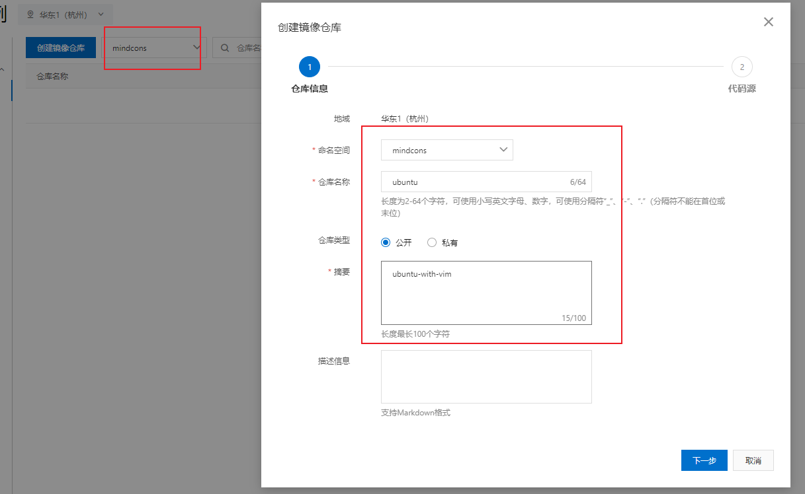

docker基础与进阶
来源：https://www.bilibili.com/video/BV1gr4y1U7CY
Docker简介
为什么会有docker出现？
假定您在开发一个尚硅谷的谷粒商城，您使用的是一台笔记本电脑而且您的开发环境具有特定的配置。其他开发人员身处的环境配置也各有不同。您正在开发的应用依赖于您当前的配置且还要依赖于某些配置文件。此外，您的企业还拥有标准化的测试和生产环境，且具有自身的配置和一系列支持文件。您希望尽可能多在本地模拟这些环境而不产生重新创建服务器环境的开销。请问？
您要如何确保应用能够在这些环境中运行和通过质量检测？并且在部署过程中不出现令人头疼的版本、配置问题，也无需重新编写代码和进行故障修复？
答案就是使用容器。Docker之所以发展如此迅速，也是因为它对此给出了一个标准化的解决方案—–系统平滑移植，容器虚拟化技术。
环境配置相当麻烦，换一台机器，就要重来一次，费力费时。很多人想到，能不能从根本上解决问题，软件可以带环境安装？也就是说，安装的时候，把原始环境一模一样地复制过来。开发人员利用 Docker 可以消除协作编码时“在我的机器上可正常工作”的问题。

之前在服务器配置一个应用的运行环境，要安装各种软件，就拿尚硅谷电商项目的环境来说，Java/RabbitMQ/MySQL/JDBC驱动包等。安装和配置这些东西有多麻烦就不说了，它还不能跨平台。假如我们是在 Windows 上安装的这些环境，到了 Linux 又得重新装。况且就算不跨操作系统，换另一台同样操作系统的服务器，要****移植****应用也是非常麻烦的。
传统上认为，软件编码开发/测试结束后，所产出的成果即是程序或是能够编译执行的二进制字节码等(java为例)。而为了让这些程序可以顺利执行，开发团队也得准备完整的部署文件，让维运团队得以部署应用程式，开发需要清楚的告诉运维部署团队，用的全部配置文件+所有软件环境。不过，即便如此，仍然常常发生部署失败的状况。Docker的出现使得Docker得以打破过去「程序即应用」的观念。透过镜像(images)将作业系统核心除外，运作应用程式所需要的系统环境，由下而上打包，达到应用程式跨平台间的无缝接轨运作。
docker理念
Docker是基于Go语言实现的云开源项目。
Docker的主要目标是“Build，Ship and Run Any App,Anywhere”，也就是通过对应用组件的封装、分发、部署、运行等生命周期的管理，使用户的APP（可以是一个WEB应用或数据库应用等等）及其运行环境能够做到“一次镜像，处处运行”。

Linux容器技术的出现就解决了这样一个问题，而 Docker 就是在它的基础上发展过来的。将应用打成镜像，通过镜像成为运行在Docker容器上面的实例，而 Docker容器在任何操作系统上都是一致的，这就实现了跨平台、跨服务器。只需要一次配置好环境，换到别的机子上就可以一键部署好，大大简化了操作。
一句话：
解决了运行环境和配置问题的软件容器， 方便做持续集成并有助于整体发布的容器虚拟化技术。
容器与虚拟机比较
容器发展简史


传统虚拟机技术
虚拟机（virtual machine）就是带环境安装的一种解决方案。
它可以在一种操作系统里面运行另一种操作系统，比如在Windows10系统里面运行Linux系统CentOS7。应用程序对此毫无感知，因为虚拟机看上去跟真实系统一模一样，而对于底层系统来说，虚拟机就是一个普通文件，不需要了就删掉，对其他部分毫无影响。这类虚拟机完美的运行了另一套系统，能够使应用程序，操作系统和硬件三者之间的逻辑不变。
| Win10 | VMWare | Centos7 | 各种cpu、内存网络额配置+各种软件 | 虚拟机实例 |
|---|---|---|---|---|


虚拟机的缺点：
- 资源占用多
- 冗余步骤多
- 启动慢
容器虚拟化技术
由于前面虚拟机存在某些缺点，Linux发展出了另一种虚拟化技术：
Linux容器(Linux Containers，缩写为 LXC)
Linux容器是与系统其他部分隔离开的一系列进程，从另一个镜像运行，并由该镜像提供支持进程所需的全部文件。容器提供的镜像包含了应用的所有依赖项，因而在从开发到测试再到生产的整个过程中，它都具有可移植性和一致性。
Linux 容器不是模拟一个完整的操作系统而是对进程进行隔离。有了容器，就可以将软件运行所需的所有资源打包到一个隔离的容器中。容器与虚拟机不同，不需要捆绑一整套操作系统，只需要软件工作所需的库资源和设置。系统因此而变得高效轻量并保证部署在任何环境中的软件都能始终如一地运行。


对比
比较了 Docker 和传统虚拟化方式的不同之处：
传统虚拟机技术是虚拟出一套硬件后，在其上运行一个完整操作系统，在该系统上再运行所需应用进程；
容器内的应用进程直接运行于宿主的内核，容器内没有自己的内核且也没有进行硬件虚拟。因此容器要比传统虚拟机更为轻便。
每个容器之间互相隔离，每个容器有自己的文件系统 ，容器之间进程不会相互影响，能区分计算资源。
更多虚拟化介绍，可以，看《现代操作系统》的1.7.5小节：虚拟机，及第7章 虚拟化和云
能干嘛
技术职级变化
coderprogrammersoftware engineerDevOps engineer
开发/运维（DevOps）新一代开发工程师
一次构建、随处运行
更快速的应用交付和部署
传统的应用开发完成后，需要提供一堆安装程序和配置说明文档，安装部署后需根据配置文档进行繁杂的配置才能正常运行。Docker化之后只需要交付少量容器镜像文件，在正式生产环境加载镜像并运行即可，应用安装配置在镜像里已经内置好，大大节省部署配置和测试验证时间。
更便捷的升级和扩缩容
随着微服务架构和Docker的发展，大量的应用会通过微服务方式架构，应用的开发构建将变成搭乐高积木一样，每个Docker容器将变成一块“积木”，应用的升级将变得非常容易。当现有的容器不足以支撑业务处理时，可通过镜像运行新的容器进行快速扩容，使应用系统的扩容从原先的天级变成分钟级甚至秒级。
更简单的系统运维
应用容器化运行后，生产环境运行的应用可与开发、测试环境的应用高度一致，容器会将应用程序相关的环境和状态完全封装起来，不会因为底层基础架构和操作系统的不一致性给应用带来影响，产生新的BUG。当出现程序异常时，也可以通过测试环境的相同容器进行快速定位和修复。
更高效的计算资源利用
Docker是内核级虚拟化，其不像传统的虚拟化技术一样需要额外的Hypervisor支持，所以在一台物理机上可以运行很多个容器实例，可大大提升物理服务器的CPU和内存的利用率。
Docker应用场景

哪些企业在使用
新浪


美团


蘑菇街


去哪下
- 官网
- docker官网：http://www.docker.com
- 仓库
- Docker Hub官网: https://hub.docker.com/
Docker安装
前提说明
CentOS Docker 安装
前提条件
目前，CentOS 仅发行版本中的内核支持 Docker。Docker 运行在CentOS 7 (64-bit)上，要求系统为64位、Linux系统内核版本为 3.8以上，这里选用Centos7.x

查看自己的内核uname命令用于打印当前系统相关信息（内核版本号、硬件架构、主机名称和操作系统类型等）。
1 | cat /etc/redhat-release |


Docker的基本组成
镜像(image)
Docker 镜像（Image）就是一个只读的模板。镜像可以用来创建 Docker 容器，一个镜像可以创建很多容器。
它也相当于是一个root文件系统。比如官方镜像 centos:7 就包含了完整的一套 centos:7 最小系统的 root 文件系统。
相当于容器的“源代码”，docker镜像文件类似于Java的类模板，而docker容器实例类似于java中new出来的实例对象。

容器(container)
从面向对象角度
Docker 利用容器（Container）独立运行的一个或一组应用，应用程序或服务运行在容器里面，容器就类似于一个虚拟化的运行环境，容器是用镜像创建的运行实例。就像是Java中的类和实例对象一样，镜像是静态的定义，容器是镜像运行时的实体。容器为镜像提供了一个标准的和隔离的运行环境，它可以被启动、开始、停止、删除。每个容器都是相互隔离的、保证安全的平台
从镜像容器角度
可以把容器看做是一个简易版的 Linux 环境（包括root用户权限、进程空间、用户空间和网络空间等）和运行在其中的应用程序。
仓库(repository)
仓库（Repository）是集中存放镜像文件的场所。
类似于Maven仓库，存放各种jar包的地方；
github仓库，存放各种git项目的地方；
Docker公司提供的官方registry被称为Docker Hub，存放各种镜像模板的地方。仓库分为公开仓库（Public）和私有仓库（Private）两种形式。
最大的公开仓库是 Docker Hub(https://hub.docker.com/)，
存放了数量庞大的镜像供用户下载。国内的公开仓库包括阿里云 、网易云等
小总结
需要正确的理解仓库/镜像/容器这几个概念:
Docker 本身是一个容器运行载体或称之为管理引擎。我们把应用程序和配置依赖打包好形成一个可交付的运行环境，这个打包好的运行环境就是image镜像文件。只有通过这个镜像文件才能生成Docker容器实例(类似Java中new出来一个对象)。
image文件可以看作是容器的模板。Docker 根据 image 文件生成容器的实例。同一个 image 文件，可以生成多个同时运行的容器实例。
镜像文件
image 文件生成容器实例，本身也是一个文件，称为镜像文件。
容器实例
一个容器运行一种服务，当我们需要的时候，就可以通过docker客户端创建一个对应的运行实例，也就是我们的容器
仓库
就是放一堆镜像的地方，我们可以把镜像发布到仓库中，需要的时候再从仓库中拉下来就可以了。
Docker平台架构图解(架构版)
首次懵逼正常，后续深入，先有大概轮廓，混个眼熟
整体架构及底层通信原理简述
Docker 是一个 C/S 模式的架构，后端是一个松耦合架构，众多模块各司其职。
Docker运行的基本流程为：
1.用户是使用Docker Client与Docker Daemon建立通信，并发送请求给后者
2.Docker Daemon作为Docker架构中的主体部分，首先提供Docker Server的使其可以接受Docker Client的请求
3.Docer Engine执行Docker内部的一系列工作，每一项工作都是以一个Job的形式存在
4.Job的运行过程中，当需要容器镜像时，则从Docker Registry中下载镜像，并通过镜像管理驱动Graph Driver将下载镜像以Graph的形式存储
5.当需要为Docker创建网络环境时，通过网络管理驱动Network Driver创建配置Docker容器网络环境
6.当需要限制Docker容器运行资源或执行用户指令等操作时，则通过Exec Driver来完成
7.LibContainer是一项独立容器管理包，Network Driver以及Exec Driver都是通过LibContainer来实现具体对容器的操作


为什么Docker会比VM虚拟机快
docker有着比虚拟机更少的抽象层
由于docker不需要Hypervisor(虚拟机)实现硬件资源虚拟化,运行在docker容器上的程序直接使用的都是实际物理机的硬件资源。因此在CPU、内存利用率上docker将会在效率上有明显优势。
docker利用的是宿主机的内核,而不需要加载操作系统OS内核
当新建一个容器时,docker不需要和虚拟机一样重新加载一个操作系统内核。进而避免引寻、加载操作系统内核返回等比较费时费资源的过程,当新建一个虚拟机时,虚拟机软件需要加载OS,返回新建过程是分钟级别的。而docker由于直接利用宿主机的操作系统,则省略了返回过程,因此新建一个docker容器只需要几秒钟。


安装步骤
CentOS7安装Docker
官网安装手册：https://docs.docker.com/engine/install/centos/
如果之前安装过
1 | sudo yum remove docker \ |
It’s OK if yum reports that none of these packages are installed.
The contents of /var/lib/docker/, including images, containers, volumes, and networks, are preserved. The Docker Engine package is now called docker-ce.
Install using the repository
yum安装gcc相关
1
2
3yum install -y gcc
yum install -y gcc-c++安装需要的软件包，
Set up the repositoryInstall the
yum-utilspackage (which provides theyum-config-managerutility) and set up the repository.1
2
3
4
5sudo yum install -y yum-utils
sudo yum-config-manager \
--add-repo \
https://download.docker.com/linux/centos/docker-ce.repo官网上的第二条命令是可选的，注意这个仓库在国外，后面下载会很慢，会报各种网络错误。使用阿里云的库
1
2
3sudo yum-config-manager \
--add-repo \
http://mirrors.aliyun.com/docker-ce/linux/centos/docker-ce.repo更新
yum软件包索引（重建yum安装的索引）1
2
3
4
5// centos 7
yum makecache fast
// centos 8
yum makecache
正式安装
Docker Engine1
sudo yum install docker-ce docker-ce-cli containerd.io docker-compose-plugin
If prompted to accept the GPG key, verify that the fingerprint matches
060A 61C5 1B55 8A7F 742B 77AA C52F EB6B 621E 9F35, and if so, accept it.This command installs Docker, but it doesn’t start Docker. It also creates a
dockergroup, however, it doesn’t add any users to the group by default.启动
dokcer1
2
3sudo systemctl start docker
ps -ef | grep docker
查看
docker的客户端和服务端版本1
docker version

卸载Docker Engine
停止doker服务
1 | systemctl stop docker |
卸载
1.Uninstall the Docker Engine, CLI, Containerd, and Docker Compose packages:
1 | sudo yum remove docker-ce docker-ce-cli containerd.io docker-compose-plugin |
2.Images, containers, volumes, or customized configuration files on your host are not automatically removed. To delete all images, containers, and volumes:
1 | sudo rm -rf /var/lib/docker |
You must delete any edited configuration files manually.
运行helo world
1 | docker run hello-world |

To generate this message, Docker took the following steps:
- The Docker client contacted the Docker daemon.
- The Docker daemon pulled the “hello-world” image from the Docker Hub.(amd64)
- The Docker daemon created a new container from that image which runs the executable that produces the output you are currently reading.
- The Docker daemon streamed that output to the Docker client, which sent it to your terminal.

阿里云镜像加速
https://promotion.aliyun.com/ntms/act/kubernetes.html
注册一个属于自己的阿里云账户(可复用淘宝账号)
获得加速器地址连接
- 登陆阿里云开发者平台
- 点击控制台
- 选择容器镜像服务
- 镜像工具–镜像加速器
执行脚本
1
2
3
4
5
6
7
8
9
10
11sudo mkdir -p /etc/docker
sudo tee /etc/docker/daemon.json <<-'EOF'
{
"registry-mirrors": ["https://ydav5e1h.mirror.aliyuncs.com"]
}
EOF
sudo systemctl daemon-reload
sudo systemctl restart docker
Docker常用命令
帮助启动类命令
启动docker：
systemctl start docker停止docker：
systemctl stop docker重启docker：
systemctl restart docker查看docker状态：
systemctl status docker开机启动：
systemctl enable docker查看docker概要信息：
docker info查看docker总体帮助文档：
docker --help查看docker命令帮助文档：
docker 具体命令 --help
镜像命令
docker images
列出本地主机上的镜像

各个选项说明：
REPOSITORY：表示镜像的仓库源TAG：镜像的标签版本号一仓库源可以有多个 TAG版本，代表这个仓库源的不同个版本，我们使用 ``REPOSITORY:TAG` 来定义不同的镜像。
如果你不指定一个镜像的版本标签，例如你只使用
ubuntu，docker 将默认使用ubuntu:latest镜像
IMAGE ID：镜像IDCREATED：镜像创建时间SIZE：镜像大小
docker images [OPTIONS]
OPTIONS说明：-a:列出本地所有的镜像（含历史映像层）- 镜像是有层层堆叠的，后面讲容器卷的时候再详细讲
-q:只显示镜像ID。
docker search
在https://hub.docker.com网站上，搜索某个XXX镜像名字

各个选项说明：
NAME：镜像名称DESCRIPTION：描述STARTS：点赞数OFFICIAL：是否为官方认证AUTOMATED：是否为自动构建编译的

一般选官方认证的
docker search [OPTIONS] 镜像名称
OPTIONS说明：--limit: 只列出N个镜像，默认25个：docker search --limit 5 redis
docker pull
拉取（下载）某个XXX镜像
docker pull 镜像名字[:TAG]docker pull 镜像名字- 没有
TAG就是最新版 - 等价于
docker pull 镜像名字:latest
- 没有
建议指定版本号，不然今年下一次，隔了段时间人家镜像更新了，再
docker images查看时，显示的版本是latest，但实际上应该不是最新了

docker system df
查看镜像/容器/数据卷所占的空间

docker rmi
docker rmi ，删除镜像
删除单个
docker rmi 某个XXX镜像名字docker rmi -f 某个XXX镜像名字ID，强制删除
删除多个
docker rmi -f 镜像名1:TAG 镜像名2:TAG
删除全部
docker rmi -f $(docker images -qa)
面试题：谈谈docker虚悬镜像是什么？
- 是什么
- 仓库名、标签都是
<none>的镜像，俗称虚悬镜像dangling image - 建议删除，有时候
docker在构建时会出问题
- 仓库名、标签都是
容器命令
每一个容器实例，都是一个简易版的Linux环境 + 运行在其中的应用程序
其中的Linux环境，包括root用户权限、进程空间、用户空间和网络空间
有镜像才能创建容器， 这是根本前提(下载一个CentOS或者ubuntu镜像演示)

docker run
docker run [OPTIONS] IMAGE [COMMAND] [ARG...]
OPTIONS说明（常用）：有些是一个减号，有些是两个减号
–name=”容器新名字”，为容器指定一个名称；
-d: 后台运行容器并返回容器ID，也即启动守护式容器(后台运行)；
-i：以交互模式运行容器，通常与 -t 同时使用；
-t：为容器重新分配一个伪输入终端，通常与 -i 同时使用；也即启动交互式容器(前台有伪终端，等待交互)；
-P: 随机端口映射，大写P
-p: 指定端口映射，小写p
–rm：容器退出时就能够自动清理容器内部的文件系统。
运行带有
--rm标志的容器对于那些只用于很短时间而仅用于完成某事的容器是有好处的，例如，在容器内编译应用程序，或者只是测试它可以工作的事物，然后您就会知道它是一个短暂的容器，告诉您的Docker守护程序，一旦运行完毕，请清除与其相关的所有内容并节省磁盘空间。
使用镜像centos:latest以交互模式启动一个容器,在容器内执行/bin/bash命令。
1 | docker pull centos |
docker ps
docker ps [OPTIONS]
OPTIONS说明（常用）：
- -a :列出当前所有正在运行的容器+历史上运行过的
- -l :显示最近创建的容器。
- -n：显示最近n个创建的容器。
- -q :静默模式，只显示容器编号。
1 | docker ps -a |

退出容器
- run进去容器，exit退出，容器停止
- run进去容器，
ctrl+p+q退出，容器不停止
启停容器
启动已停止运行的容器
- docker start 容器ID或者容器名
重启容器
- docker restart 容器ID或者容器名
停止容器
- docker stop 容器ID或者容器名
强制停止容器
- docker kill 容器ID或容器名
删除已停止的容器
- docker rm 容器ID
一次性删除多个容器实例
docker rm -f $(docker ps -aq)
docker ps -a -q | xargs docker rm
重要
有镜像才能创建容器，这是根本前提(下载一个Redis6.0.8镜像演示)
启动守护式容器(后台服务器)
在大部分的场景下，我们希望 docker 的服务是在后台运行的， 我们可以过 -d 指定容器的后台运行模式。
docker run -d 容器名
使用镜像centos:latest以后台模式启动一个容器
docker run -d centos
问题：然后docker ps -a 进行查看, 会发现容器已经退出
很重要的要说明的一点: Docker容器后台运行,就必须有一个前台进程.
容器运行的命令如果不是那些一直挂起的命令（比如运行top，tail），就是会自动退出的。
这个是docker的机制问题,比如你的web容器,我们以nginx为例，正常情况下,我们配置启动服务只需要启动响应的service即可。例如service nginx start。但是，这样做，nginx为后台进程模式运行，就导致docker前台没有运行的应用，这样的容器后台启动后,会立即自杀因为他觉得他没事可做了.
所以，最佳的解决方案是,将你要运行的程序以前台进程的形式运行，常见就是命令行模式，表示我还有交互操作
redis 前后台启动演示
前台交互式启动
docker run -it redis:6.0.8
后台守护式启动
docker run -d redis:6.0.8

查看容器
现代开发机制
- 编码开发微服务
- 上线部署容器化
- 时时刻刻要监控
查看容器日志
docker logs 容器ID
查看容器内运行的进程
docker top 容器ID
查看容器内部细节
docker inspect 容器ID高级篇会经常用到
1
docker inspect dd80d0e5ddb5
1
2
3
4
5
6
7
8
9
10
11
12
13
14
15
16
17
18
19
20
21
22
23
24
25
26
27
28
29
30
31
32
33
34
35
36
37
38
39
40
41
42
43
44
45
46
47
48
49
50
51
52
53
54
55
56
57
58
59
60
61
62
63
64
65
66
67
68
69
70
71
72
73
74
75
76
77
78
79
80
81
82
83
84
85
86
87
88
89
90
91
92
93
94
95
96
97
98
99
100
101
102
103
104
105
106
107
108
109
110
111
112
113
114
115
116
117
118
119
120
121
122
123
124
125
126
127
128
129
130
131
132
133
134
135
136
137
138
139
140
141
142
143
144
145
146
147
148
149
150
151
152
153
154
155
156
157
158
159
160
161
162
163
164
165
166
167
168
169
170
171
172
173
174
175
176
177
178
179
180
181
182
183
184
185
186
187
188
189
190
191
192
193
194
195
196
197
198
199
200
201
202
203
204
205
206
207
208
209
210
211
212
213
214
215
216
217
218
219
220
221
222
223
224
225
226
227
228
229
230
231
232
233
234
235
236
237[
{
"Id": "dd80d0e5ddb53e17f3dd17d31f757be4c0857a4e02f4916403e6d53c28132e15",
"Created": "2022-12-02T07:04:41.211659046Z",
"Path": "docker-entrypoint.sh",
"Args": [
"redis-server"
],
"State": {
"Status": "running",
"Running": true,
"Paused": false,
"Restarting": false,
"OOMKilled": false,
"Dead": false,
"Pid": 3370746,
"ExitCode": 0,
"Error": "",
"StartedAt": "2022-12-02T07:04:41.66243713Z",
"FinishedAt": "0001-01-01T00:00:00Z"
},
"Image": "sha256:7614ae9453d1d87e740a2056257a6de7135c84037c367e1fffa92ae922784631",
"ResolvConfPath": "/var/lib/docker/containers/dd80d0e5ddb53e17f3dd17d31f757be4c0857a4e02f4916403e6d53c28132e15/resolv.conf",
"HostnamePath": "/var/lib/docker/containers/dd80d0e5ddb53e17f3dd17d31f757be4c0857a4e02f4916403e6d53c28132e15/hostname",
"HostsPath": "/var/lib/docker/containers/dd80d0e5ddb53e17f3dd17d31f757be4c0857a4e02f4916403e6d53c28132e15/hosts",
"LogPath": "/var/lib/docker/containers/dd80d0e5ddb53e17f3dd17d31f757be4c0857a4e02f4916403e6d53c28132e15/dd80d0e5ddb53e17f3dd17d31f757be4c0857a4e02f4916403e6d53c28132e15-json.log",
"Name": "/hardcore_yonath",
"RestartCount": 0,
"Driver": "overlay2",
"Platform": "linux",
"MountLabel": "",
"ProcessLabel": "",
"AppArmorProfile": "",
"ExecIDs": null,
"HostConfig": {
"Binds": null,
"ContainerIDFile": "",
"LogConfig": {
"Type": "json-file",
"Config": {}
},
"NetworkMode": "default",
"PortBindings": {},
"RestartPolicy": {
"Name": "no",
"MaximumRetryCount": 0
},
"AutoRemove": false,
"VolumeDriver": "",
"VolumesFrom": null,
"CapAdd": null,
"CapDrop": null,
"CgroupnsMode": "host",
"Dns": [],
"DnsOptions": [],
"DnsSearch": [],
"ExtraHosts": null,
"GroupAdd": null,
"IpcMode": "private",
"Cgroup": "",
"Links": null,
"OomScoreAdj": 0,
"PidMode": "",
"Privileged": false,
"PublishAllPorts": false,
"ReadonlyRootfs": false,
"SecurityOpt": null,
"UTSMode": "",
"UsernsMode": "",
"ShmSize": 67108864,
"Runtime": "runc",
"ConsoleSize": [
0,
0
],
"Isolation": "",
"CpuShares": 0,
"Memory": 0,
"NanoCpus": 0,
"CgroupParent": "",
"BlkioWeight": 0,
"BlkioWeightDevice": [],
"BlkioDeviceReadBps": null,
"BlkioDeviceWriteBps": null,
"BlkioDeviceReadIOps": null,
"BlkioDeviceWriteIOps": null,
"CpuPeriod": 0,
"CpuQuota": 0,
"CpuRealtimePeriod": 0,
"CpuRealtimeRuntime": 0,
"CpusetCpus": "",
"CpusetMems": "",
"Devices": [],
"DeviceCgroupRules": null,
"DeviceRequests": null,
"KernelMemory": 0,
"KernelMemoryTCP": 0,
"MemoryReservation": 0,
"MemorySwap": 0,
"MemorySwappiness": null,
"OomKillDisable": false,
"PidsLimit": null,
"Ulimits": null,
"CpuCount": 0,
"CpuPercent": 0,
"IOMaximumIOps": 0,
"IOMaximumBandwidth": 0,
"MaskedPaths": [
"/proc/asound",
"/proc/acpi",
"/proc/kcore",
"/proc/keys",
"/proc/latency_stats",
"/proc/timer_list",
"/proc/timer_stats",
"/proc/sched_debug",
"/proc/scsi",
"/sys/firmware"
],
"ReadonlyPaths": [
"/proc/bus",docker run -d \
-p 15432:15432 \
-v /data/data01/hh/desktop/software/postgresql/data:/data/postgres/pgdata \
--name pgsql \
-e POSTGRES_PASSWORD=123456 \
postgres
"/proc/fs",
"/proc/irq",
"/proc/sys",
"/proc/sysrq-trigger"
]
},
"GraphDriver": {
"Data": {
"LowerDir": "/var/lib/docker/overlay2/f0dd8d56846af6f1e9e903e1bb2ad527f78bf9966b52c1b6ba77fbabecc4899e-init/diff:/var/lib/docker/overlay2/c70822f2ac680e33dcdocker run -d \
-p 15432:15432 \
-v /data/data01/hh/desktop/software/postgresql/data:/data/postgres/pgdata \
--name pgsql \
-e POSTGRES_PASSWORD=123456 \
postgres
4081970b5df5a9f355d29d0d510547569c0b27c45418f9/diff:/var/lib/docker/overlay2/59ed6759fd2016b86a531e3f903d270242c064f7dce1a07abcef6e8132ebb2f7/diff:/var/lib/docker/overlay2/c2deb9acfb98c8e4fe4f658d6449aa9dfa13af154c915364f8d4a550b6a6f2fe/diff:/var/lib/docker/overlay2/fbb54e593e420265a153f51e39882bc066092c63342cbebd1f3ef22ea2c59e8f/diff:/var/lib/docker/overlay2/9860676cd7d185d3ea3472a7b1d5d03776659149cb5725875bc4a98651a75e5c/diff:/var/lib/docker/overlay2/002472f7da6df42c266b40d5bf3b36280b8c35c0e39c40d63618b5a48f3e632c/diff",
"MergedDir": "/var/lib/docker/overlay2/f0dd8d56846af6f1e9e903e1bb2ad527f78bf9966b52c1b6ba77fbabecc4899e/merged",
"UpperDir": "/var/lib/docker/overlay2/f0dd8d56846af6f1e9e903e1bb2ad527f78bf9966b52c1b6ba77fbabecc4899e/diff",
"WorkDir": "/var/lib/docker/overlay2/f0dd8d56846af6f1e9e903e1bb2ad527f78bf9966b52c1b6ba77fbabecc4899e/work"
},
"Name": "overlay2"
},
"Mounts": [
{
"Type": "volume",
"Name": "2f5dc33229b460514ddc4e0fd1c6639c35e7b27726239ec68677a73b1fd3c128",
"Source": "/var/lib/docker/volumes/2f5dc33229b460514ddc4e0fd1c6639c35e7b27726239ec68677a73b1fd3c128/_data",
"Destination": "/data",
"Driver": "local",
"Mode": "",
"RW": true,
"Propagation": ""
}
],
"Config": {
"Hostname": "dd80d0e5ddb5",
"Domainname": "",
"User": "",
"AttachStdin": false,
"AttachStdout": false,
"AttachStderr": false,
"ExposedPorts": {
"6379/tcp": {}
},
"Tty": false,
"OpenStdin": false,
"StdinOnce": false,
"Env": [
"PATH=/usr/local/sbin:/usr/local/bin:/usr/sbin:/usr/bin:/sbin:/bin",
"GOSU_VERSION=1.12",
"REDIS_VERSION=6.2.6",
"REDIS_DOWNLOAD_URL=http://download.redis.io/releases/redis-6.2.6.tar.gz",
"REDIS_DOWNLOAD_SHA=5b2b8b7a50111ef395bf1c1d5be11e6e167ac018125055daa8b5c2317ae131ab"
],
"Cmd": [
"redis-server"
],
"Image": "redis",
"Volumes": {
"/data": {}
},
"WorkingDir": "/data",
"Entrypoint": [
"docker-entrypoint.sh"
],
"OnBuild": null,
"Labels": {}
},
"NetworkSettings": {
"Bridge": "",
"SandboxID": "540012be4f1e21b45c9de1d84a9dfa19bf4ab68ed081cec5f63a77a44655193e",
"HairpinMode": false,
"LinkLocalIPv6Address": "",
"LinkLocalIPv6PrefixLen": 0,
"Ports": {
"6379/tcp": null
},
"SandboxKey": "/var/run/docker/netns/540012be4f1e",
"SecondaryIPAddresses": null,
"SecondaryIPv6Addresses": null,
"EndpointID": "36b386081d51afe1b4600c10f8e7278d6f5f97f2e3347270da975d049f73c1c5",
"Gateway": "172.17.0.1",
"GlobalIPv6Address": "",
"GlobalIPv6PrefixLen": 0,
"IPAddress": "172.17.0.2",
"IPPrefixLen": 16,
"IPv6Gateway": "",
"MacAddress": "02:42:ac:11:00:02",
"Networks": {
"bridge": {
"IPAMConfig": null,
"Links": null,
"Aliases": null,
"NetworkID": "206a95977e775861ab70848d41370db1feb303bdfed0337ad0403c5835691668",
"EndpointID": "36b386081d51afe1b4600c10f8e7278d6f5f97f2e3347270da975d049f73c1c5",
"Gateway": "172.17.0.1",
"IPAddress": "172.17.0.2",
"IPPrefixLen": 16,
"IPv6Gateway": "",
"GlobalIPv6Address": "",
"GlobalIPv6PrefixLen": 0,
"MacAddress": "02:42:ac:11:00:02",
"DriverOpts": null
}
}
}
}
]
进入容器
进入正在运行的容器并以命令行交互
前提：容器是在运行着的，可以以后启动的形式，创建容器，或者重新启动容器
docker exec -it 容器ID bashShell1
2
3
4
5docker exec -it centos /bin/bash
docker exec --help
exit // 退出
重新进入
docker attach 容器ID不推荐使用
上述两个区别
- attach 直接进入容器启动命令的终端，不会启动新的进程，用exit退出，会导致容器的停止。
- exec 是在容器中打开新的终端，并且可以启动新的进程 用exit退出，不会导致容器的停止。
用之前的redis容器实例进入试试
1 | [root@VM-4-12-centos ~]# docker start dd80d0e5ddb5 |
云原生和容器化下的入职新流程：
- 先装个
docker - 给个项目需要的所有镜像列表，拉一下，跑通
从容器内拷贝文件到主机
docker cp 容器ID:容器内路径 目的主机路径
在宿主机上操作
1 | docker cp 96d12932d737:/root/a.txt /home |
导入/导出容器
export导出容器的内容留作为一个tar归档文件
1
docker export dd80d0e5ddb5 > docker_redis_export.tar
导出的目录为当前目录

import从tar包中的内容创建一个新的文件系统再导入为镜像
cat 文件名.tar | docker import - 镜像用户/镜像名:镜像版本号测试前，可以先把redis的容器停止再删掉
1
cat docker_redis_export.tar | docker import - sai/my-redis:1.0.0

再以这个镜像，恢复成容器实例
1
2
3docker run -it 5c50e17b0f8e /bin/bash
docker ps -a注意：这里的镜像名并不是自定义的镜像名，而是用的镜像ID

小总结

1 | attach Attach to a running container # 当前 shell 下 attach 连接指定运行镜像 |
Docker镜像
镜像
是一种轻量级、可执行的独立软件包，它包含运行某个软件所需的所有内容，我们把应用程序和配置依赖打包好形成一个可交付的运行环境(包括代码、运行时需要的库、环境变量和配置文件等)，这个打包好的运行环境就是image镜像文件。
只有通过这个镜像文件才能生成Docker容器实例(类似Java中new出来一个对象)。
分层的镜像
以我们的pull为例，在下载的过程中我们可以看到docker的镜像好像是在一层一层的在下载

UnionFS（联合文件系统）
可以看下《现代操作系统》的第四章，了解下文件系统
UnionFS（联合文件系统）：Union文件系统（UnionFS）是一种分层、轻量级并且高性能的文件系统，它支持对文件系统的修改作为一次提交来一层层的叠加，同时可以将不同目录挂载到同一个虚拟文件系统下(unite several directories into a single virtual filesystem)。Union 文件系统是 Docker 镜像的基础。镜像可以通过分层来进行继承，基于基础镜像（没有父镜像），可以制作各种具体的应用镜像。
特性：一次同时加载多个文件系统，但从外面看起来，只能看到一个文件系统，联合加载会把各层文件系统叠加起来，这样最终的文件系统会包含所有底层的文件和目录
Docker镜像加载原理
docker的镜像实际上由一层一层的文件系统组成，这种层级的文件系统UnionFS。
bootfs(boot file system)主要包含bootloader和kernel，bootloader主要是引导加载kernel，Linux刚启动时会加载bootfs文件系统，在Docker镜像的最底层是引导文件系统bootfs。这一层与我们典型的Linux/Unix系统是一样的，包含boot加载器和内核。当boot加载完成之后整个内核就都在内存中了，此时内存的使用权已由bootfs转交给内核，此时系统也会卸载bootfs。
rootfs (root file system) ，在bootfs之上。包含的就是典型 Linux 系统中的 /dev, /proc, /bin, /etc 等标准目录和文件。rootfs就是各种不同的操作系统发行版，比如Ubuntu，Centos等等。

平时我们安装进虚拟机的CentOS都是好几个G，为什么docker这里才200多M？？

对于一个精简的OS，rootfs可以很小，只需要包括最基本的命令、工具和程序库就可以了，因为底层直接用Host宿主机的kernel，自己只需要提供 rootfs 就行了。由此可见对于不同的linux发行版, bootfs基本是一致的, rootfs会有差别, 因此不同的发行版可以公用bootfs。
为什么 Docker 镜像要采用这种分层结构呢
镜像分层最大的一个好处就是共享资源，方便复制迁移，就是为了复用。
比如说有多个镜像都从相同的 base 镜像构建而来，那么 Docker Host 只需在磁盘上保存一份 base 镜像；
同时内存中也只需加载一份 base 镜像，就可以为所有容器服务了。而且镜像的每一层都可以被共享。
重点理解
Docker镜像层都是只读的，容器层是可写的
当容器启动时，一个新的可写层被加载到镜像的顶部。这一层通常被称作“容器层”，“容器层”之下的都叫“镜像层”。
所有对容器的改动 - 无论添加、删除、还是修改文件都只会发生在容器层中。只有容器层是可写的，容器层下面的所有镜像层都是只读的。

commit命令
docker commit提交容器副本使之成为一个新的镜像
1 | docker commit -m="提交的描述信息" -a="作者" 容器ID 要创建的目标镜像名:[标签名] |
案例演示ubuntu安装vim
从Hub上下载ubuntu镜像到本地并成功运行
原始的默认Ubuntu镜像是不带着vim命令的

外网连通的情况下，安装vim
1
2
3
4
5# 先更新包管理工具
apt-get update
# 安装vim
apt-get -y install vim安装完成后，commit我们自己的新镜像
1
2
3docker commit -m="提交的描述信息" -a="作者" 容器ID 要创建的目标镜像名:[标签名]
docker commit -m="ubuntu-with-vim" -a="author" ce4f0c9dd8f2 sai/ubuntu-with-vim:1.3启动我们的新镜像并和原来的对比


将镜像打包成本地文件
1
2# 指令：docker save 镜像id > 文件名.tar
docker save 172825a55619 > ./watch_ocr.tar# watch_ocr.tar为打包的文件在另一台主机加载本地文件到镜像
1
2# 指令：docker load < 文件名.tar
docker load < watch_ocr.tar # watch_ocr.tar 为文件名称镜像重命名

执行完上述语句后，查看本地镜像，会看到新加载的镜像名字和标签都是none，利用该镜像的id对名字和标签重新命名即可：
1
docker tag 172825a55619 watch_ocr:1.2

创建容器
1
docker run -it --name watch_ocr_contain 172825a55619 /bin/bash
docker批量导出导入本地镜像
导出脚本
1
2
3
4
5
6
7
8
9
10
11
12
13
14
15
16
17
18
19
20
21
22
23
24
25
26
27
# 获取到 "image:tag" 格式的镜像名
IMG_NAME=`docker images | grep -v TAG | awk '{print $1":"$2}'`
# echo $IMG_NAME | awk '{gsub(/ /,"\n",$0)} {print $0}'
# 如果原本镜像名中存在 "/" 是需要去掉的
# 定义镜像存放目录
DIR="/data/docker/image_tar"
if [ ! -d "$DIR" ]; then
echo -e "\033[34m${DIR}\033[0m 不存在"
mkdir -p "$DIR"
echo -e "\033[34m${DIR}\033[0m 已创建"
else
echo -e "\033[34m${DIR}\033[0m 已存在"
fi
echo ""
for IMAGE in $IMG_NAME
do
echo -e "正在保存 \033[33m${IMAGE}\033[0m"
SAVE_NAME=`echo $IMAGE | awk -F: '{print $1"_"$2}' | sed 's/\//_/g'`
docker save $IMAGE -o ${DIR}/${SAVE_NAME}.tar
echo -e "已保存到 \033[34m${DIR}/\033[31m${SAVE_NAME}.tar\033[0m"
echo ""
done导入脚本
1
2
3
4
5
6
7
8
9
10
11
12
# 在此处填写镜像文件的保存目录
IMAGE_DIR="/data/docker/image_tar"
for IMAGE in `ls $IMAGE_DIR`
do
echo -e "正在导入镜像 \033[33m$IMAGE\033[0m"
docker load -i ${IMAGE_DIR}/${IMAGE}
echo -e "已成功导入镜像 \033[33m$IMAGE\033[0m"
echo ""
done
小总结
Docker中的镜像分层，支持通过扩展现有镜像，创建新的镜像。类似Java继承于一个Base基础类，自己再按需扩展。
新镜像是从 base 镜像一层一层叠加生成的。每安装一个软件，就在现有镜像的基础上增加一层

本地镜像发布到阿里云
本地镜像发布到阿里云流程

镜像的生成方法
1 | # 基于当前容器创建一个新的镜像，新功能增强 |
OPTIONS说明：
a :提交的镜像作者；
m :提交时的说明文字；
开通个人版（个人免费版，试用，不建议用在生产环境）
创建命名空间

选择命名空间，创建镜像仓库

此时阿里云会生成一系列的脚本命名，执行第三条的，将镜像推送到仓库的命令
1
2
3$ docker login --username=17*****21 registry.cn-hangzhou.aliyuncs.com
$ docker tag [ImageId] registry.cn-hangzhou.aliyuncs.com/mindcons/ubuntu:[镜像版本号]
$ docker push registry.cn-hangzhou.aliyuncs.com/mindcons/ubuntu:[镜像版本号]1
2
3
4
5docker login --username=17*****21 registry.cn-hangzhou.aliyuncs.com
docker tag f109f4e4ab55 registry.cn-hangzhou.aliyuncs.com/mindcons/ubuntu:1.3
docker push registry.cn-hangzhou.aliyuncs.com/mindcons/ubuntu:1.3刚好有两层

将阿里云上的镜像拉取下来使用
先把本地对应的容器和镜像删除，复合镜像需强制删除

从阿里云上拉取镜像
1
2
3docker pull registry.cn-hangzhou.aliyuncs.com/mindcons/ubuntu:[镜像版本号]
docker pull registry.cn-hangzhou.aliyuncs.com/mindcons/ubuntu:1.3
后面的DockerFile章节，是第2种方法
本地镜像发布到私有库
1.官方Docker Hub地址：https://hub.docker.com/，中国大陆访问太慢了且准备被阿里云取代的趋势，不太主流。
2.Dockerhub、阿里云这样的公共镜像仓库可能不太方便，涉及机密的公司不可能提供镜像给公网，所以需要创建一个本地私人仓库供给团队使用，基于公司内部项目构建镜像。
Docker Registry是官方提供的工具，可以用于构建私有镜像仓库
下载镜像Docker Registry
1
docker pull registry
运行私有库Registry，相当于本地有个私有Docker hub
1
2
3
4
5docker run -d -p 5000:5000 -v /data/registry/:/tmp/registry --privileged=true registry
# 默认情况，仓库被创建在容器的/var/lib/registry目录下，建议自行用容器卷映射，方便于宿主机联调
# 如果报端口号错误，最好手敲一遍
# 端口号别自己改案例演示创建一个新镜像，ubuntu安装ifconfig命令
从Hub上下载ubuntu镜像到本地并成功运行
原始的Ubuntu镜像是不带着ifconfig命令的
外网连通的情况下，安装ifconfig命令并测试通过
1
2
3
4
5
6
7
8
9
10
11
12
13
14
15
16
17
18
19
20
21
22
23
24
25
26
27
28
29
30
31
32
33
34
35
36
37
38
39
40
41
42
43
44
45
46
47
48
49
50
51
52
53
54
55
56
57
58
59
60
61
62
63
64
65
66
67docker pull ubuntu
docker run -it ubuntu /bin/bash
# docker容器内执行上述两条命令：
apt-get update
#安装ifconfig命令工具
apt-get install net-tools
root@88495d96990a:/# ifconfig
eth0: flags=4163<UP,BROADCAST,RUNNING,MULTICAST> mtu 1500
inet 172.17.0.4 netmask 255.255.0.0 broadcast 172.17.255.255
ether 02:42:ac:11:00:04 txqueuelen 0 (Ethernet)
RX packets 6197 bytes 25261154 (25.2 MB)
RX errors 0 dropped 0 overruns 0 frame 0
TX packets 3887 bytes 336314 (336.3 KB)
TX errors 0 dropped 0 overruns 0 carrier 0 collisions 0
lo: flags=73<UP,LOOPBACK,RUNNING> mtu 65536
inet 127.0.0.1 netmask 255.0.0.0
loop txqueuelen 1000 (Local Loopback)
RX packets 0 bytes 0 (0.0 B)
RX errors 0 dropped 0 overruns 0 frame 0
TX packets 0 bytes 0 (0.0 B)
TX errors 0 dropped 0 overruns 0 carrier 0 collisions 0
# 容器外执行commit命令
docker commit -m="ubuntu-with-ifconfig" -a="mindcons" 88495d96990a sai/ubuntu-with-ifconfig:1.3
# 关闭之前的容器
docker stop 88495d96990a
# curl验证私服库上有什么镜像
curl -XGET http://ip:5000/v2/_catalog
# {"repositories":[]}
# 将新镜像修改符合私服规范的Tag
按照公式： docker tag 镜像:Tag Host:Port/Repository:Tag
# ip地址填自己的
docker tag zzyyubuntu:1.2 192.168.111.162:5000/zzyyubuntu:1.2
docker tag sai/ubuntu-with-ifconfig:1.3 192.168.111.162:5000/sai/ubuntu-with-ifconfig:1.3
# 修改配置文件使之支持http
vim /etc/docker/daemon.json
{
"registry-mirrors": ["https://aa25jngu.mirror.aliyuncs.com"],
"insecure-registries": ["192.168.111.162:5000"]
}
#docker默认不允许http方式推送镜像，通过配置选项来取消这个限制。====> 修改完后如果不生效，建议重启docker（实际生产环境慎用）
{
"registry-mirrors": ["https://aa25jngu.mirror.aliyuncs.com"],
"insecure-registries": ["192.168.111.162:5000"]
}
# 重启下之前关掉的容器
# push推送到私服库
docker push 192.168.111.162:5000/zzyyubuntu:1.2
# 再次 curl验证私服库上有什么镜像
curl -XGET http://ip:5000/v2/_catalog
{"repositories":["sai/ubuntu-with-ifconfig"]}
# 删除正在运行的测试容器和镜像，然后从私服库上拉取镜像，注意要带上版本号
docker pull 192.168.111.162:5000/zzyyubuntu:1.2
Docker容器数据卷
坑：容器卷记得加入
--privileged=true
Docker挂载主机目录访问如果出现cannot open directory .: Permission denied
解决办法：在挂载目录后多加一个--privileged=true参数即可
如果是CentOS7，安全模块会比之前系统版本加强，不安全的会先禁止，目录挂载的情况被默认为不安全的行为，
在SELinux里面挂载目录被禁止掉了，如果要开启，我们一般使用--privileged=true命令，扩大容器的权限解决挂载目录没有权限的问题，也即使用该参数，container内的root拥有真正的root权限，否则，container内的root只是外部的一个普通用户权限。
回顾下上一讲的知识点，参数V
实际工作中，如果遇到没用过的，别卡着，先用，走通了再说！！！
1 | docker run -d -p 5000:5000 -v /data/registry/:/tmp/registry --privileged=true registry |
-v参数，冒号左边表示宿主机的路径，冒号右边表示容器内的路径
卷就是目录或文件，存在于一个或多个容器中，由docker挂载到容器，但不属于联合文件系统，因此能够绕过Union File System提供一些用于持续存储或共享数据的特性：
卷的设计目的就是数据的持久化，完全独立于容器的生存周期，因此Docker不会在容器删除时删除其挂载的数据卷
有点类似Redis里面的rdb和aof文件
将docker容器内的数据保存进宿主机的磁盘中
运行一个带有容器卷存储功能的容器实例
1 | docker run -it --privileged=true -v /宿主机绝对路径目录:/容器内目录 镜像名 |
能干嘛
将应用与运行的环境打包镜像，run后形成容器实例运行 ，但是我们对数据的要求希望是持久化的
Docker容器产生的数据，如果不备份，那么当容器实例删除后，容器内的数据自然也就没有了。
为了能保存数据在docker中我们使用卷。
特点：
1：数据卷可在容器之间共享或重用数据
2：卷中的更改可以直接实时生效，爽
3：数据卷中的更改不会包含在镜像的更新中
4：数据卷的生命周期一直持续到没有容器使用它为止
容器卷案例
宿主vs容器之间映射添加容器卷
直接命令添加
1 | 公式：docker run -it -v /宿主机目录:/容器内目录 ubuntu /bin/bash |
查看数据卷是否挂载成功
1 | docker inspect 容器ID |

容器和宿主机之间数据共享
1 docker修改，主机同步获得
2 主机修改，docker同步获得
3 docker容器stop，主机修改，docker容器重启看数据是否同步。
- 同步的
读写规则映射添加说明
读写（默认），
:rw1
docker run -it --name myu3 --privileged=true -v /tmp/myHostData:/tmp/myDockerData:rw ubuntu /bin/bash
只读（容器内部被限制，只能读取，不能写），
ro(read only)1
docker run -it --name myu3 --privileged=true -v /tmp/myHostData:/tmp/myDockerData:ro ubuntu /bin/bash
此时如果宿主机写入内容，可以同步给容器内，容器可以读取到。
卷的继承和共享
容器1完成和宿主机的映射
1
docker run -it --privileged=true -v /mydocker/u:/tmp --name u1 ubuntu
容器2继承容器1的卷规则
1
2
3# docker run -it --privileged=true --volumes-from 父类 --name u2 ubuntu
docker run -it --privileged=true --volumes-from u1 --name u2 ubuntu继承的只是容器卷挂载的规则，父类挂了不影响子类
Docker常规安装简介
云原生的基础

总体步骤
搜索镜像
拉取镜像
查看镜像
启动镜像
服务端口映射
停止容器
移除容器
安装tomcat
docker hub上面查找tomcat镜像
1
docker search tomcat
从docker hub上拉取tomcat镜像到本地
1
docker pull tomcat
docker images查看是否有拉取到的tomcat
使用tomcat镜像创建容器实例(也叫运行镜像)
1
docker run -it -p 8080:8080 tomcat
访问tomcat首页
问题

解决
可能没有映射端口或者没有关闭防火墙、云服务器可能需要开放安全组
把webapps.dist目录换成webapps
1
2
3
4
5
6
7
8
9# 拿到容器ID
docker ps
# 进入容器
docker exec -it 92be0dabefc5 /bin/bash
# 把空目录webapps删除，将webapps.dist目录重命名为webapps
# 或者直接复制
cp -r webapps.dist/* webapps可成功访问

免修改版说明
1
2
3docker pull billygoo/tomcat8-jdk8
docker run -d -p 8080:8080 --name mytomcat8 billygoo/tomcat8-jdk8
安装redis
从docker hub上(阿里云加速器)拉取redis镜像到本地标签为6.0.8
1 | 新建目录 |
修改redis.conf文件
1 | 1 开启redis验证 可选 |
使用redis6.0.8镜像创建容器(也叫运行镜像)
1 | docker run -p 6379:6379 --name myredis3 --privileged=true -v /app/redis/redis.conf:/etc/redis/redis.conf -v /app/redis/data:/data -d redis:6.0.8 redis-server /etc/redis/redis.conf |
测试redis-cli连接上来

安装vscode
拉取镜像
1 | docker pull codercom/code-server |
创建并启动容器
1 | docker run -id \ |
参数说明:
- -u root 表示启用root用户权限 这一步很关键 不然很多文件无法操作
- -p 8443：8080 将容器的8080端口映射到主机的8443端口 用于浏览器访问
- 左边表示宿主机的端口
- 右边表示容器的端口
- 需要开启端口，放开防火墙
- -p 5500:5500 将容器的5500端口映射到主机的5500端口 用于开发过程中代码修改后实时更新查看
vscode的live serve插件，默认的是5500端口
- -e PASSWORD=…… 设置远程登录密码
- 密码可以自定义
- -v $PWD/coder:/home/coder将主机中当前目录挂载到容器
- 到需要开发的目录下执行命令
- 也可以指定绝对路径
- -h 设置容器的hostname
- –name=code_server 给容器取个名称
- $PWD表示当前所在目录
创建容器后，访问ip:8443

安装liveServe插件，会有点慢，稍作等待即可

其他插件，看情况安装
安装mysql
mysql - Official Image | Docker Hub
方案一
docker hub上面查找mysql镜像
1
docker search mysql
从docker hub上(阿里云加速器)拉取mysql镜像到本地标签为5.7
1
docker pull mysql:5.7
使用mysql5.7镜像创建容器(也叫运行镜像)
简单版
1
2
3
4docker run -p 3306:3306 -e MYSQL_ROOT_PASSWORD=123456 -d mysql:5.7
docker ps
docker exec -it 容器ID /bin/bash
mysql -uroot -p问题
docker上默认字符集编码隐患，docker里面的mysql容器实例查看，内容如下：
1
SHOW VARIABLES LIKE 'character%'

注意不要用连接工具查看，连接工具会在客户端更改字符显示，但服务器上的字符编码不是utf-8。
新版本的mysql不存在这个问题（mysql8默认编码是utf-8）
删除容器后，里面的mysql数据怎么办？
实战版
新建mysql容器实例
1
2
3
4
5# -e 表示环境变量
# 挂三个卷，分别放日志、数据、配置
# /zzyyuse 换成自己的工作目录
# 注意端口号占用情况、--name是否重名
docker run -d -p 3306:3306 --privileged=true -v /zzyyuse/mysql/log:/var/log/mysql -v /zzyyuse/mysql/data:/var/lib/mysql -v /zzyyuse/mysql/conf:/etc/mysql/conf.d -e MYSQL_ROOT_PASSWORD=123456 --name mysql mysql:5.7新建my.cnf，通过容器卷同步给mysql容器实例

复制如下配置
1
2
3
4
5[client]
default_character_set=utf8
[mysqld]
collation_server = utf8_general_ci
character_set_server = utf8重新启动mysql容器实例再重新进入并查看字符编码


这时进去输入密码，会报1045错，见方案二
docker安装完MySQL并run出容器后，建议请先修改完字符集编码后再新建mysql库-表-插数据
如果不小心把容器删除了，用相同的挂载路径新建容器，数据都还是在的
方案二
1.docker拉取mysql版本：
1 | sudo docker pull mysql:5.7 |
2.创建挂载目录：
可以看看是否已经存在了
1 | mkdir /usr/local/mysql |
用于挂载mysql数据文件
1 | mkdir /usr/local/mysql/data |
用于挂载mysql配置文件
1 | mkdir /usr/local/mysql/conf.d |
3 启动容器
1 | docker run --name mysql5.7 -p 3306:3306 -v /usr/local/mysql/data:/var/lib/mysql -v /usr/local/mysql/conf.d:/etc/mysql/conf.d -e MYSQL_ROOT_PASSWORD=jkjk@qaz12 -d mysql:5.7 |
处理mysql 1045报错
1 在 /usr/local/mysql/conf.d目录下增加文件： my.cnf
文件内容为：
1 | [mysqld] |
2 重启mysql：
1 | docker restart mysql |
3进入docker的bash：
1 | docker exec -it mysql bash |
4登录mysql：
1 | mysql -u root -p |
复制粘贴之前设置的密码
5设置root密码为空，注意root密码是加密的，设置其它值不好找到对应的明文。
命令是分开的
1 | use mysql; |
//更新为空
1 | update user set authentication_string='' where user='root'; |
6 退出mysql，把第一步的skip-grant-tables注释。再重启mysql
1 | exit |
7 使用 root用户，密码 回车键登录；
直接回车
1 | mysql -u root -p |
8 修改root密码：
1 | alter user 'root'@'localhost' IDENTIFIED BY 'jkjk@qaz12'; |
修改root密码完成。
9 可附加一步授权：
（报语法错误，跳过）
1 | GRANT all ON . TO 'root'@'%' IDENTIFIED BY 'jkjk@qaz12' ; |
至此，可以用数据库连接工具连接
其他
1 | sudo docker run -d -p 3306:3306 -v /usr/local/mysql/conf:/etc/mysql/conf.d -v /usr/local/mysql/data:/var/lib/mysql -e MYSQL_ROOT_PASSWORD=jkjk@qaz12 --name mysql mysql:5.7 |
1 | 配置端口映射： |
测试
1 | docker exec -it mysql bash |
1 | mysql -h localhost -u root -p |
安装doccano
安装Label Studio
拉取镜像
1 | docker pull heartexlabs/label-studio:latest |
新建一个目录并进入
1 | cd /data/labelstudio |
安装vnc（废弃）
(11条消息) 用docker启动ubuntu的桌面环境_菜鸟怕怕的博客-CSDN博客_docker ubuntu桌面
拉取镜像：
1 | docker pull dorowu/ubuntu-desktop-lxde-vnc |
运行容器：
1 | docker run -p 6080:80 -p 5900:5900 -e RESOLUTION=1920x1080 -e VNC_PASSWORD=VNC登录的密码 -v /dev/shm:/dev/shm dorowu/ubuntu-desktop-lxde-vnc |
更新源：https://blog.csdn.net/qq_41296187/article/details/123723093
1 | sudo apt-get update |
安装vscode：https://blog.csdn.net/qq_50840738/article/details/126060563
安装中文包（未成功）：
https://www.lijiejie.com/ubuntu-vps-config-lxde-vnc/
https://www.bbsmax.com/A/GBJr7y7q50/
安装vnc2
基于新建dockerfile配置sudo，具体参考《Docker-Ubuntu环境搭建playwright环境》
1 | ### https://hub.docker.com/r/kasmweb/ubuntu-focal-desktop |
重新打包成镜像
1 | sudo docker run -it --name=ubuntu-focal-desktop-origin --shm-size=512m -p 8086:6901 -p 8087:9878 -p 8088:9879 -p 29880:9880 -e VNC_PW=password -v /data/data01/hh/ubuntu-focal-desktop:/app kasmweb/ubuntu-focal-desktop:1.12.0 |
vscode中无法新建文件
- 更改挂载目录的用户和用户组，可以用portainer看下status中进程是哪个用户的
安装edge：https://blog.csdn.net/weixin_49689323/article/details/124253429
官网下载deb文件，进入到文件目录
1
2
3
4
5
6sudo dpkg -i 下载的文件名.deb
sudo apt-get install -f
补充：
sudo dpkg -r package # 删除包 -r: remove
此方法的默认安装目录为: /opt这时候在应用程序>Internet中就可以可以发现我们的Edge了
但此时无法打开，需要修改
1
2
3
4vim /usr/bin/microsoft-edge
# 在最后一行 添加两个参数
exec -a "$0" "$HERE/msedge" "$@" --user-data-dir --no-sandbox
更新默认浏览器，以便vscode登录
ubuntu软件安装在哪里/安装位置：https://blog.csdn.net/universe_R/article/details/122113798
1
2
3
4
5
6
7
8# 添加sudoers PATH https://blog.csdn.net/hello_1995/article/details/109222650
# 或者直接进入已配置号的secure_path，如/usr/bin中，执行
sudo apt install firefox
# 若安装失败，需要更新下
sudo apt-get update
# 或者可以选择已安装的edge浏览器，在/opt目录下宿主机配置访问github，https://blog.csdn.net/qq_51368339/article/details/127889467
1
2
3# 使用ssh -v命令，打出详细日志。
ssh -vT git@github.com
# 可能就是单纯的慢安装中文输入法
首先查看是否安装了中文语言包
1
locale -a
查看是否有：
zh_CN.utf8
如果没有，首先需要安装中文语言包，输入以下命令：1
2sudo apt-get install language-pack-zh-hans
然后添加中文支持
1
2sudo locale-gen zh_CN.UTF-8
修改locale文件配置
1
sudo vim /etc/default/locale
1
2
3
4
5
6
7
8
9
10
11
12LANG="zh_CN.UTF-8"
LANGUAGE="zh_CN:zh:en_US:en"
LC_NUMERIC="zh_CN.UTF-8"
LC_TIME="zh_CN.UTF-8"
LC_MONETARY="zh_CN.UTF-8"
LC_PAPER="zh_CN.UTF-8"
LC_IDENTIFICATION="zh_CN.UTF-8"
LC_NAME="zh_CN.UTF-8"
LC_ADDRESS="zh_CN.UTF-8"
LC_TELEPHONE="zh_CN.UTF-8"
LC_MEASUREMENT="zh_CN.UTF-8"
LC_ALL=zh_CN.UTF-8重启容器
WSL2 Ubuntu20.04 打开language support闪退解决办法
1
2sudo apt-get install dbus
sudo /etc/init.d/dbus start想要打开language support设置汉语，结果一直闪退

Ubuntu 22.04 同时安装ibus和fcitx会冲突，导致系统卡死。但是操作完上述步骤后，会自动安装fcitx，所以需要先卸载fcitx：
1
2
3
4
5
6sudot apt-get remove fcitx*
sudo apt-get purge fcitx*
sudo apt-get autoremove安装
1
2
3
4
5
6sudo apt-get install dbus
sudo /etc/init.d/dbus start
sudo apt install ibus-libpinyin之后在
settings——>IBus Preferences——>Input Method——>选择中文智能拼音
若出现如下提示

按要求修改即可
问题：IBus不能自动启动
解决方法：
点击菜单System >> Preferences >> Startup Applications
如果通过这种方式找不到，则直接在控制台运行：gnome-session-properties
点击后会出现startup application窗口：
Click the button: Add1
2
3Name: IBus daemon
Command: /usr/bin/ibus-daemon -d
Comment: start IBus daemon when Gnome starts如果点击一个地方并输入时，ibus的框框没有消失，可以再装一下
1
sudo apt-get install ibus-pinyin
安装wps
修改文件最大监测数
https://blog.csdn.net/lxyoucan/article/details/116736501
https://blog.csdn.net/weixin_42375768/article/details/118637237
在宿主机中配置，不是在容器内
1
2
3
4
5
6
7
8
9sudo vim /etc/sysctl.conf
# 在底部添加一行
fs.inotify.max_user_watches=524288
# 保存退出然后执行
sudo sysctl -p
安装postgres
注意最好指定版本号，不能拉取最新的镜像，否则用navicat链接，可能会报datlastsysoid字段不存在，因为的确新版本的psql删除了这个字段
https://blog.csdn.net/weixin_44127299/article/details/127883966
1 | docker pull postgres:12.3 |
如果-v 宿主机目录，之前是已经创建过了的，要把目录删掉
另外，容器内的端口，就设置为默认的5432，不要自己改
下面的唯一要改的就是自己的主机的路径
1 | docker run -it --name postgres01 --restart always -e TZ='Asia/Shanghai' -e POSTGRES_PASSWORD='postgres' -e ALLOW_IP_PANGE=0.0.0.0/0 -p 15432:5432 -v /data/data01/hh/software/postgres/data:/var/lib/postgresql/data -d postgres:12.3 |
上述命令执行完之后，如果没有公网端口，配置本地隧道后，用navicat测试，直接是通的
注意，如果宿主机路径是在ubuntu-docker管理下，并且误操作修改了用户用户组，再次连接时，会报错。虽然说重启下容器就可以了，但最好还是把宿主机放在一个单独的路径下。

下面内容可以跳过
把容器内文件复制出来，修改pg_hba.conf
2
3
4
docker cp /data/data01/hh/desktop/software/pg_hba.conf 867b74c8c53f:/var/lib/postgresql/data/
docker cp 867b74c8c53f:/var/lib/postgresql/data/postgresql.conf /data/data01/hh/desktop/software/
在导入sql数据时，要手动建库名和模式名，库名可以自定义，模式名和给定的sql文件中，保持一致即可

安装不同版本的chrome
安装centos
1 | docker run -itd -p 17094:22 -p 17095:8080 -p 17096:17096 --privileged --name centos7_server_2 centos:7 /usr/sbin/init |
《docker安装nginx、安装tomcat、安装Centos7、容器导入导出、镜像上传到仓库》
安装ubuntu
开启容器
安装Docker：确保您的CentOS系统已安装Docker。您可以按照Docker官方文档提供的说明进行安装。
拉取Ubuntu 18镜像：使用以下命令从Docker Hub上拉取Ubuntu 18的镜像：
1
2
docker pull ubuntu:18.04创建并启动Ubuntu容器：运行以下命令创建一个新的Ubuntu容器并启动它，
1
docker run -it -v /data/data03/ubuntu-server:/app -p 28015:28015/udp -p 28016:28016/tcp --name ubuntu-server ubuntu:18.04 /bin/bash
这将创建一个名为
my_ubuntu的容器，将本地主机的/data/data03/ubuntu-server目录映射到容器内的/app目录，并将主机的UDP端口28015映射到容器的UDP端口28015，TCP端口28016映射到容器的TCP端口28016。进入Ubuntu容器：容器启动后，使用以下命令进入Ubuntu容器：
1
docker exec -it ubuntu-server /bin/bash
现在，您可以在Ubuntu容器中进行任何必要的配置或安装其他软件。
更新源
在已经安装了Ubuntu 18的Docker容器中，您可以按照以下步骤来更新软件源：
进入Ubuntu容器：首先，确保您已经进入正在运行的Ubuntu容器的交互式Shell。如果您尚未进入容器，请使用以下命令进入容器：
1
docker exec -it my_ubuntu /bin/bash
执行源更新：在Ubuntu容器内，使用以下命令更新软件源：
1
apt-get update
这将从Ubuntu的软件源服务器上获取最新的软件包列表。
执行软件包升级：完成软件源更新后，您可以执行以下命令升级已安装的软件包：
1
apt-get upgrade
这将升级容器内的所有已安装软件包到最新可用版本。
（可选）清理不需要的软件包：您可以使用以下命令删除已升级软件包后不再需要的依赖关系和文件：
1
apt-get autoremove
这将自动删除不再需要的软件包和相关文件
安装常见的软件
1 | # 安装vim编辑器 |
配置githbub正常访问
首先我们编辑/etc/hosts文件：
1 | sudo vi /etc/hosts |
复制
然后把原始文件中的与github.com相关的内容先删除，再将如下内容放到文件的末尾：
1 | 140.82.114.25 alive.github.com |
复制
修改完成后esc+:wq退出，然后安装一个nscd：
1 | $ sudo apt install nscd |
复制
最后再重启一下nscd服务即可：
1 | $ sudo /etc/init.d/nscd restart |
复制
这样一波操作之后，Github就可以快速访问了
总结概要
在国内一些局域网下访问github.com可能会存在一些问题，甚至可能直接就无法访问。但是我们可以通过对指定的域名配置一个ip地址，这样在解析的时候就会自动跳转到我们手动选取的那个可访问的节点上。虽然该方法下还是偶尔有可能出现无法访问的情况，但是总体来说还是很大程度上的改善了github.com的访问体验。
新建用户并配置sudoers
进入Ubuntu容器：首先，请确保您已经进入正在运行的Ubuntu容器的交互式Shell。如果您尚未进入容器，请使用以下命令进入容器：
1
docker exec -it my_ubuntu /bin/bash
创建rustserver用户：在Ubuntu容器内，使用以下命令创建一个名为rustserver的用户：
1
adduser rustserver
您将会被提示设置rustserver用户的密码和其他相关信息。
输入密码后，含
[]的可以直接空格
赋予sudoers权限：要赋予rustserver用户sudoers权限，您可以执行以下步骤：
a. 安装sudo软件包（如果尚未安装）：
1
apt-get install sudo
b. 编辑sudoers文件以允许rustserver用户具有sudo权限：
1
visudo
这将打开一个文本编辑器，显示sudoers文件的内容。
c. 在文件中找到以下行：
1
root ALL=(ALL:ALL) ALL
d. 在该行下方添加以下内容，以授权rustserver用户具有sudo权限：
1
rustserver ALL=(ALL:ALL) ALL

e.
Esc :wq保存并关闭文件。
安装lgsm
详细请参考官网：https://linuxgsm.com/servers/rustserver/
视频教程：https://www.bilibili.com/video/BV1VU4y1W7sn/
依赖安装：
Ubuntu < 20.04
1 | sudo dpkg --add-architecture i386; sudo apt update; sudo apt install curl wget file tar bzip2 gzip unzip bsdmainutils python3 util-linux ca-certificates binutils bc jq tmux netcat lib32gcc1 lib32stdc++6 libsdl2-2.0-0:i386 steamcmd lib32z1 |
安装过程中，需要tab选中或者enter选中同意条款
切换到rustserver用户操作
备注：已配置sudoers权限，避免上述依赖安装不全，可自行安装
1 | # 切换到rustserver用户 |

1 | # 赋予可执行权限，并执行安装lgsm |
安装好lgsm后，再安装rustserver
1 | ./rustserver install |
这一步需要去github上拉取资源，由于国内网络原因，如果失败了，多试几次：

如果的确缺少依赖的话，使用rustserver安装，会提示输入下密码
成功界面：

最后一个协议，可以不用同意

先不着急，根据自己的实际情况，配置下服务器参数文件：

1 | vim /home/rustserver/serverfiles/server/rustserver/cfg/server.cfg |
1 | # 可以修改服务器描述，头图，介绍网址 |
再进入lsgm的配置文件夹：

1 | cd /home/rustserver/lgsm/config-lgsm/rustserver |
查看配置文件，里面是没有内容的

将模板文件内容写入
1 | cp _default.cfg rustserver.cfg |
然后可以修改下内容：
1 | #### Game Server Settings #### |
可以修改下rconpassword
保存退出后，cd直接返回根目录
安装oxide插件
1 | cd /home/rustserver |

等待下载完毕，就可以启动服务器了
1 | .rustserver start |
Docker复杂安装详说
安装mysql主从复制
主从复制原理：默认你懂
新建主服务器容器实例3307
1 | docker run -p 3307:3306 --name mysql-master \ |
进入/mydata/mysql-master/conf目录下新建my.cnf
vim my.cnf
1 | [mysqld] |
修改完配置后重启master实例
1 | docker restart mysql-master |
进入mysql-master容器
1 | docker exec -it mysql-master /bin/bash |
master容器实例内创建数据同步用户
1 | CREATE USER 'slave'@'%' IDENTIFIED BY '123456'; |
新建从服务器容器实例3308
1 | docker run -p 3308:3306 --name mysql-slave \ |
进入/mydata/mysql-slave/conf目录下新建my.cnf
vim my.cnf
1 | [mysqld] |
修改完配置后重启slave实例
1 | docker restart mysql-slave |
在主数据库中查看主从同步状态
1 | show master status; |
进入mysql-slave容器
1 | docker exec -it mysql-slave /bin/bash |
在从数据库中配置主从复制
1 | change master to master_host='宿主机ip', master_user='slave', master_password='123456', master_port=3307, master_log_file='mall-mysql-bin.000001', master_log_pos=617, master_connect_retry=30; |

主从复制命令参数说明
1 | master_host：主数据库的IP地址； |
在从数据库中查看主从同步状态
1 | show slave status \G; |

在从数据库中开启主从同步

查看从数据库状态发现已经同步

主从复制测试
主机新建库-使用库-新建表-插入数据，ok
从机使用库-查看记录，ok
安装redis集群
大厂面试题第4季-分布式存储案例真题
cluster(集群)模式-docker版 哈希槽分区进行亿级数据存储
面试题
1~2亿条数据需要缓存，请问如何设计这个存储案例
回答
单机单台100%不可能，肯定是分布式存储，用redis如何落地？
上述问题阿里P6~P7工程案例和场景设计类必考题目， 一般业界有3种解决方案
哈希取余分区

2亿条记录就是2亿个k,v，我们单机不行必须要分布式多机，假设有3台机器构成一个集群，用户每次读写操作都是根据公式：
hash(key) % N个机器台数，计算出哈希值，用来决定数据映射到哪一个节点上。
优点：
简单粗暴，直接有效，只需要预估好数据规划好节点，例如3台、8台、10台，就能保证一段时间的数据支撑。使用Hash算法让固定的一部分请求落到同一台服务器上，这样每台服务器固定处理一部分请求（并维护这些请求的信息），起到负载均衡+分而治之的作用。
缺点：
原来规划好的节点，进行扩容或者缩容就比较麻烦了额，不管扩缩，每次数据变动导致节点有变动，映射关系需要重新进行计算，在服务器个数固定不变时没有问题，如果需要弹性扩容或故障停机的情况下，原来的取模公式就会发生变化：Hash(key)/3会变成Hash(key) /?。此时地址经过取余运算的结果将发生很大变化，根据公式获取的服务器也会变得不可控。
某个redis机器宕机了，由于台数数量变化，会导致hash取余全部数据重新洗牌。
一致性哈希算法分区
一致性Hash算法背景：一致性哈希算法在1997年由麻省理工学院中提出的，设计目标是为了解决分布式缓存数据变动和映射问题，某个机器宕机了，分母数量改变了，自然取余数不OK了。
能干嘛：提出一致性Hash解决方案。 目的是当服务器个数发生变动时， 尽量减少影响客户端到服务器的映射关系
算法构建一致性哈希环
一致性哈希环
一致性哈希算法必然有个hash函数并按照算法产生hash值，这个算法的所有可能哈希值会构成一个全量集，这个集合可以成为一个hash空间[0,2^32-1]，这个是一个线性空间，但是在算法中，我们通过适当的逻辑控制将它首尾相连(0 = 2^32),这样让它逻辑上形成了一个环形空间。
它也是按照使用取模的方法，前面笔记介绍的节点取模法是对节点（服务器）的数量进行取模。而一致性Hash算法是对2^32取模，简单来说，一致性Hash算法将整个哈希值空间组织成一个虚拟的圆环，如假设某哈希函数H的值空间为0-2^32-1（即哈希值是一个32位无符号整型），整个哈希环如下图：整个空间按顺时针方向组织，圆环的正上方的点代表0，0点右侧的第一个点代表1，以此类推，2、3、4、……直到2^32-1，也就是说0点左侧的第一个点代表2^32-1， 0和2^32-1在零点中方向重合，我们把这个由2^32个点组成的圆环称为Hash环。

服务器IP节点映射
节点映射
将集群中各个IP节点映射到环上的某一个位置。
将各个服务器使用Hash进行一个哈希，具体可以选择服务器的IP或主机名作为关键字进行哈希，这样每台机器就能确定其在哈希环上的位置。假如4个节点NodeA、B、C、D，经过IP地址的哈希函数计算(hash(ip))，使用IP地址哈希后在环空间的位置如下：

key落到服务器的落键规则
当我们需要存储一个kv键值对时，首先计算key的hash值，hash(key)，将这个key使用相同的函数Hash计算出哈希值并确定此数据在环上的位置，从此位置沿环顺时针行走，第一台遇到的服务器就是其应该定位到的服务器，并将该键值对存储在该节点上。
如我们有Object A、Object B、Object C、Object D四个数据对象，经过哈希计算后，在环空间上的位置如下：根据一致性Hash算法，数据A会被定为到Node A上，B被定为到Node B上，C被定为到Node C上，D被定为到Node D上。

优点
一致性哈希算法的容错性
容错性
假设Node C宕机，可以看到此时对象A、B、D不会受到影响，只有C对象被重定位到Node D。一般的，在一致性Hash算法中，如果一台服务器不可用，则受影响的数据仅仅是此服务器到其环空间中前一台服务器（即沿着逆时针方向行走遇到的第一台服务器）之间数据，其它不会受到影响。简单说，就是C挂了，受到影响的只是B、C之间的数据，并且这些数据会转移到D进行存储。

一致性哈希算法的扩展性
扩展性
数据量增加了，需要增加一台节点NodeX，X的位置在A和B之间，那收到影响的也就是A到X之间的数据，重新把A到X的数据录入到X上即可，
不会导致hash取余全部数据重新洗牌。

缺点
一致性哈希算法的数据倾斜问题
Hash环的数据倾斜问题
一致性Hash算法在服务节点太少时，容易因为节点分布不均匀而造成数据倾斜（被缓存的对象大部分集中缓存在某一台服务器上）问题
例如系统中只有两台服务器：

小总结
为了在节点数目发生改变时尽可能少的迁移数据
将所有的存储节点排列在收尾相接的Hash环上，每个key在计算Hash后会顺时针找到临近的存储节点存放。
而当有节点加入或退出时仅影响该节点在Hash环上顺时针相邻的后续节点。
优点
加入和删除节点只影响哈希环中顺时针方向的相邻的节点，对其他节点无影响。
缺点
数据的分布和节点的位置有关，因为这些节点不是均匀的分布在哈希环上的，所以数据在进行存储时达不到均匀分布的效果。
哈希槽分区
为什么出现：解决一致性哈希算法的数据倾斜问题
哈希槽实质就是一个数组，数组[0,2^14 -1]形成hash slot空间。
能干什么：解决均匀分配的问题，在数据和节点之间又加入了一层，把这层称为哈希槽（slot），用于管理数据和节点之间的关系，现在就相当于节点上放的是槽，槽里放的是数据。

槽解决的是粒度问题，相当于把粒度变大了，这样便于数据移动。
哈希解决的是映射问题，使用key的哈希值来计算所在的槽，便于数据分配。
多少个hash槽：一个集群只能有16384个槽，编号0-16383（0-2^14-1）。这些槽会分配给集群中的所有主节点，分配策略没有要求。可以指定哪些编号的槽分配给哪个主节点。集群会记录节点和槽的对应关系。解决了节点和槽的关系后，接下来就需要对key求哈希值，然后对16384取余，余数是几key就落入对应的槽里。slot = CRC16(key) % 16384。以槽为单位移动数据，因为槽的数目是固定的，处理起来比较容易，这样数据移动问题就解决了。
哈希槽计算
Redis 集群中内置了 16384 个哈希槽，redis 会根据节点数量大致均等的将哈希槽映射到不同的节点。当需要在 Redis 集群中放置一个 key-value时，redis 先对 key 使用 crc16 算法算出一个结果，然后把结果对 16384 求余数，这样每个 key 都会对应一个编号在 0-16383 之间的哈希槽，也就是映射到某个节点上。如下代码，key之A 、B在Node2， key之C落在Node3上


3主3从redis集群搭建
关闭防火墙+启动docker后台服务
1 | systemctl start docker |
新建6个docker容器redis实例
1 | docker run -d --name redis-node-1 --net host --privileged=true -v /data/redis/share/redis-node-1:/data redis:6.0.8 --cluster-enabled yes --appendonly yes --port 6381 |
参数解释
1 | docker run |
进入容器redis-node-1并为6台机器构建集群关系
进入容器
1 | docker exec -it redis-node-1 /bin/bash |
构建主从关系
注意，进入docker容器后才能执行一下命令，且注意自己的真实IP地址
1 | redis-cli --cluster create 192.168.111.147:6381 192.168.111.147:6382 192.168.111.147:6383 192.168.111.147:6384 192.168.111.147:6385 192.168.111.147:6386 --cluster-replicas 1 |
参数解释
1 | --cluster-replicas 1 表示为每个master创建一个slave节点 |


一切OK的话，3主3从搞定
链接进入6381作为切入点，查看集群状态
链接进入6381作为切入点，查看节点状态


数据读写存储
启动6机构成的集群并通过exec进入
对6381新增两个key
防止路由失效加参数-c并新增两个key

集群环境，加入参数-c，优化路由

查看集群信息
1 | redis-cli --cluster check 192.168.111.147:6381 |

容错切换迁移
主6381和从机切换，先停止主机6381
6381主机停了，对应的真实从机上位
6381作为1号主机分配的从机以实际情况为准，具体是几号机器就是几号
再次查看集群信息

6381宕机了，6385上位成为了新的master。
每次案例下面挂的从机以实际情况为准，具体是几号机器就是几号
还原之前的3主3从
先启6381
1 | docker start redis-node-1 |

redis-node-1启动后，不会变成master
主从扩容案例
新建6387、6388两个节点+新建后启动+查看是否8节点
1 | docker run -d --name redis-node-7 --net host --privileged=true -v /data/redis/share/redis-node-7:/data redis:6.0.8 --cluster-enabled yes --appendonly yes --port 6387 |
进入6387容器实例内部
1 | docker exec -it redis-node-7 /bin/bash |
将新增的6387节点(空槽号)作为master节点加入原集群
1 | redis-cli --cluster add-node 自己实际IP地址:6387 自己实际IP地址:6381 |


检查集群情况第1次
1 | redis-cli --cluster check 真实ip地址:6381 |

重新分派槽号
1 | 命令:redis-cli --cluster reshard IP地址:端口号 |


检查集群情况第2次
1 | redis-cli --cluster check 真实ip地址:6381 |

槽号分派说明
为什么6387是3个新的区间，以前的还是连续？
重新分配成本太高，所以前3家各自匀出来一部分，从6381/6382/6383三个旧节点分别匀出1364个坑位给新节点6387

为主节点6387分配从节点6388
1 | 命令：redis-cli --cluster add-node ip:新slave端口 ip:新master端口 --cluster-slave --cluster-master-id 新主机节点ID |

检查集群情况第3次
1 | redis-cli --cluster check 192.168.111.147:6382 |


主从缩容案例
6387和6388下线
检查集群情况1获得6388的节点ID
1 | redis-cli --cluster check 192.168.111.147:6382 |

将6388删除 从集群中将4号从节点6388删除
1 | 命令：redis-cli --cluster del-node ip:从机端口 从机6388节点ID |

检查一下发现，6388被删除了，只剩下7台机器了。
1 | redis-cli --cluster check 192.168.111.147:6382 |

将6387的槽号清空，重新分配，本例将清出来的槽号都给6381
1 | redis-cli --cluster reshard 192.168.111.147:6381 |


检查集群情况第二次
1 | redis-cli --cluster check 192.168.111.147:6381 |

将6387删除
1 | 命令：redis-cli --cluster del-node ip:端口 6387节点ID |

检查集群情况第三次
1 | redis-cli --cluster check 192.168.111.147:6381 |

DockerFile解析
是什么
Dockerfile是用来构建Docker镜像的文本文件，是由一条条构建镜像所需的指令和参数构成的脚本。

https://docs.docker.com/engine/reference/builder/
构建三步骤
- 编写Dockerfile文件
docker build命令构建镜像docker run依镜像运行容器实例
DockerFile构建过程解析
Dockerfile内容基础知识
1：每条保留字指令都必须为大写字母且后面要跟随至少一个参数
2：指令按照从上到下，顺序执行
3：#表示注释
4：每条指令都会创建一个新的镜像层并对镜像进行提交
Docker执行Dockerfile的大致流程
（1）docker从基础镜像运行一个容器
（2）执行一条指令并对容器作出修改
（3）执行类似docker commit的操作提交一个新的镜像层
（4）docker再基于刚提交的镜像运行一个新容器
（5）执行dockerfile中的下一条指令直到所有指令都执行完成
小总结
从应用软件的角度来看，Dockerfile、Docker镜像与Docker容器分别代表软件的三个不同阶段，
- Dockerfile是软件的原材料
- Docker镜像是软件的交付品
- Docker容器则可以认为是软件镜像的运行态，也即依照镜像运行的容器实例
Dockerfile面向开发，Docker镜像成为交付标准，Docker容器则涉及部署与运维，三者缺一不可，合力充当Docker体系的基石。

1 Dockerfile，需要定义一个Dockerfile，Dockerfile定义了进程需要的一切东西。Dockerfile涉及的内容包括执行代码或者是文件、环境变量、依赖包、运行时环境、动态链接库、操作系统的发行版、服务进程和内核进程(当应用进程需要和系统服务和内核进程打交道，这时需要考虑如何设计namespace的权限控制)等等;
2 Docker镜像，在用Dockerfile定义一个文件之后，docker build时会产生一个Docker镜像，当运行 Docker镜像时会真正开始提供服务;
3 Docker容器，容器是直接提供服务的。
DockerFile常用保留字指令
参考tomcat8的dockerfile入门
FROM
基础镜像，当前新镜像是基于哪个镜像的，指定一个已经存在的镜像作为模板，第一条必须是from
MAINTAINER
镜像维护者的姓名和邮箱地址
RUN
容器构建时需要运行的命令
两种格式
shell格式

1
RUN yum -y install vim
exec格式

RUN是在 docker build时运行
EXPOSE
当前容器对外暴露出的端口
WORKDIR
指定在创建容器后，终端默认登陆的进来工作目录，一个落脚点
USER
指定该镜像以什么样的用户去执行，如果都不指定，默认是root
ENV
用来在构建镜像过程中设置环境变量
ENV MY_PATH /usr/mytest这个环境变量可以在后续的任何RUN指令中使用，这就如同在命令前面指定了环境变量前缀一样；
也可以在其它指令中直接使用这些环境变量，
比如：
WORKDIR $MY_PATHADD
将宿主机目录下的文件拷贝进镜像且会自动处理URL和解压tar压缩包
COPY
类似ADD，拷贝文件和目录到镜像中。 将从构建上下文目录中 <源路径> 的文件/目录复制到新的一层的镜像内的 <目标路径> 位置
1
2
3COPY src dest
COPY ["src", "dest"]<src源路径>：源文件或者源目录<dest目标路径>：容器内的指定路径，该路径不用事先建好，路径不存在的话，会自动创建。VOLUME
容器数据卷，用于数据保存和持久化工作
CMD
指定容器启动后的要干的事情
注意
Dockerfile 中可以有多个 CMD 指令，但只有最后一个生效，CMD 会被
docker run之后的参数替换参考官网Tomcat的dockerfile演示讲解

演示自己的覆盖操作，覆盖了启动命令

它和前面RUN命令的区别
CMD是在docker run 时运行。
RUN是在 docker build时运行。
ENTRYPOINT
也是用来指定一个容器启动时要运行的命令
类似于 CMD 指令，但是ENTRYPOINT不会被docker run后面的命令覆盖， 而且这些命令行参数会被当作参数送给 ENTRYPOINT 指
令指定的程序
命令格式和案例说明

ENTRYPOINT可以和CMD一起用，一般是变参才会使用 CMD ，这里的 CMD 等于是在给 ENTRYPOINT 传参。
当指定了ENTRYPOINT后，CMD的含义就发生了变化，不再是直接运行其命令而是将CMD的内容作为参数传递给ENTRYPOINT指令，他两个组合会变成
<ENTRYPOINT> "<CMD>"案例如下：假设已通过 Dockerfile 构建了 nginx:test 镜像：

是否传参 按照dockerfile编写执行 传参运行 Docker命令 docker run nginx:testdocker run nginx:test -c /etc/nginx/new.conf衍生出的实际命令 nginx -c /etc/nginx/nginx.confnginx -c /etc/nginx/new.conf优点：在执行docker run的时候可以指定 ENTRYPOINT 运行所需的参数。
注意：如果 Dockerfile 中如果存在多个 ENTRYPOINT 指令，仅最后一个生效。
案例
要求
Centos7镜像具备vim+ifconfig+jdk8
JDK的下载镜像地址，官网下载地址：
https://www.oracle.com/java/technologies/downloads/#java8
https://mirrors.yangxingzhen.com/jdk/
编写
准备编写Dockerfile文件（大写）
1 | FROM centos |
构建
1 | docker build -t 新镜像名字:TAG . |

注意，上面TAG后面有个空格，有个点
运行
1 | docker run -it 新镜像名字:TAG |

再体会下UnionFS（联合文件系统）
Union文件系统（UnionFS）是一种分层、轻量级并且高性能的文件系统，它支持对文件系统的修改作为一次提交来一层层的叠加，同时
可以将不同目录挂载到同一个虚拟文件系统下(unite several directories into a single virtual filesystem)。Union 文件系统是 Docker 镜
像的基础。镜像可以通过分层来进行继承，基于基础镜像（没有父镜像），可以制作各种具体的应用镜像。
虚悬镜像
仓库名、标签都是<none>的镜像，俗称dangling image
Dockerfile
1 | from ubuntu |
构建
1 | docker build . |

查看
1 | docker image ls -f dangling=true |
删除
虚悬镜像已经失去存在价值，可以删除
1 | docker image prune |
Docker微服务实践
略
Docker网络
先去回顾下Docker平台架构图
是什么
docker不启动，默认网络情况

ens33lovirbr0在CentOS7的安装过程中如果有选择相关虚拟化的的服务安装系统后，启动网卡时会发现有一个以网桥连接的私网地址的virbr0网卡
(virbr0网卡：它还有一个固定的默认IP地址192.168.122.1)，是做虚拟机网桥的使用的，其作用是为连接其上的虚机网卡提供 NAT访
问外网的功能。
我们之前学习Linux安装，勾选安装系统的时候附带了libvirt服务才会生成的一个东西，如果不需要可以直接将libvirtd服务卸载，
1
yum remove libvirt-libs.x86_64
docker启动后，网络情况
会产生一个名为docker0的虚拟网桥

查看docker网络模式命令
默认创建3大网络模式

常用基本命令
All命令
1
docker network --help
查看网络
1
docker network ls
查看网络源数据
1
docker network inspect XXX网络名字
删除网络
1
docker network rm XXX网络名字
案例

能干嘛
容器间的互联和通信以及端口映射
容器IP变动时候可以通过服务名直接网络通信而不受到影响
网络模式
总体介绍

1 | bridge模式：使用--network bridge指定，默认使用docker0 |
容器实例内默认网络IP生产规则
说明
1 先启动两个ubuntu容器实例

2 docker inspect 容器ID or 容器名字

3 关闭u2实例，新建u3，查看ip变化

结论
docker容器内部的ip是有可能会发生改变的
bridge
Docker 服务默认会创建一个 docker0 网桥（其上有一个 docker0 内部接口），该桥接网络的名称为docker0，它在内核层连通了其他的物理或虚拟网卡，这就将所有容器和本地主机都放到同一个物理网络。Docker 默认指定了 docker0 接口 的 IP 地址和子网掩码，让主机
和容器之间可以通过网桥相互通信。
查看 bridge 网络的详细信息，并通过 grep 获取名称项
1 | docker network inspect bridge | grep name |

1 | ifconfig |

Docker使用Linux桥接，在宿主机虚拟一个Docker容器网桥(docker0)，Docker启动一个容器时会根据Docker网桥的网段分配给容器
一个IP地址，称为Container-IP，同时Docker网桥是每个容器的默认网关。因为在同一宿主机内的容器都接入同一个网桥，这样容器
之间就能够通过容器的Container-IP直接通信。
docker run 的时候，没有指定network的话默认使用的网桥模式就是bridge，使用的就是docker0。在宿主机ifconfig,就可以看到
docker0和自己create的network(后面讲)eth0，eth1，eth2……代表网卡一，网卡二，网卡三……，lo代表127.0.0.1，即localhost，
inet addr用来表示网卡的IP地址
网桥docker0创建一对对等虚拟设备接口一个叫veth，另一个叫eth0，成对匹配。
整个宿主机的网桥模式都是docker0，类似一个交换机有一堆接口，每个接口叫veth，在本地主机和容器内分别创建一个虚拟接
口，并让他们彼此联通（这样一对接口叫veth pair）；
每个容器实例内部也有一块网卡，每个接口叫eth0；
docker0上面的每个veth匹配某个容器实例内部的eth0，两两配对，一一匹配。
通过上述，将宿主机上的所有容器都连接到这个内部网络上，两个容器在同一个网络下,会从这个网关下各自拿到分配的ip，此时两个
容器的网络是互通的。

1 | docker run -d -p 8081:8080 --name tomcat81 billygoo/tomcat8-jdk8 |
两两匹配验证

host
直接使用宿主机的 IP 地址与外界进行通信，不再需要额外进行NAT 转换。
容器将不会获得一个独立的Network Namespace， 而是和宿主机共用一个Network Namespace。容器将不会虚拟出自己的网卡而是使用宿主机的IP和端口。

1 | docker run -d -p 8083:8080 --network host --name tomcat83 billygoo/tomcat8-jdk8 |

问题：docker启动时总是遇见标题中的警告
原因：docker启动时指定–network=host或-net=host，如果还指定了-p映射端口，那这个时候就会有此警告，
并且通过-p设置的参数将不会起到任何作用，端口号会以主机端口号为主，重复时则递增。
解决：解决的办法就是使用docker的其他网络模式，例如–network=bridge，这样就可以解决问题，或者直接无视
1 | docker run -d --network host --name tomcat83 billygoo/tomcat8-jdk8 |
无之前的配对显示了，看容器实例内部

没有设置-p的端口映射了，如何访问启动的tomcat83？？
http://宿主机IP:8080/
在CentOS里面用默认的火狐浏览器访问容器内的tomcat83看到访问成功，因为此时容器的IP借用主机的，
所以容器共享宿主机网络IP，这样的好处是外部主机与容器可以直接通信。
none
在none模式下，并不为Docker容器进行任何网络配置。
也就是说，这个Docker容器没有网卡、IP、路由等信息，只有一个lo
需要我们自己为Docker容器添加网卡、配置IP等。
禁用网络功能，只有lo标识(就是127.0.0.1表示本地回环)
1 | docker run -d -p 8084:8080 --network none --name tomcat84 billygoo/tomcat8-jdk8 |
进入容器内部查看

在容器外部查看

container
container⽹络模式
新建的容器和已经存在的一个容器共享一个网络ip配置而不是和宿主机共享。新创建的容器不会创建自己的网卡，配置自己的IP，而是和一个指定的容器共享IP、端口范围等。同样，两个容器除了网络方面，其他的如文件系统、进程列表等还是隔离的。

1 | docker run -d -p 8085:8080 --name tomcat85 billygoo/tomcat8-jdk8 |

相当于tomcat86和tomcat85公用同一个ip同一个端口，导致端口冲突。本案例用tomcat演示不合适。。。演示坑
换一个镜像给大家演示
Alpine操作系统是一个面向安全的轻型 Linux发行版
Alpine Linux 是一款独立的、非商业的通用 Linux 发行版，专为追求安全性、简单性和资源效率的用户而设计。 可能很多人没听说过这个 Linux 发行版本，但是经常用 Docker 的朋友可能都用过，因为他小，简单，安全而著称，所以作为基础镜像是非常好的一个选择，可谓是麻雀虽小但五脏俱全，镜像非常小巧，不到 6M的大小，所以特别适合容器打包。
1 | docker run -it --name alpine1 alpine /bin/sh |
运行结果，验证共用搭桥

假如此时关闭alpine1，再看看alpine2

15: eth0@if16: 消失了。关闭alpine1，再看看alpine2

自定义网络
1 | docker run -d -p 8081:8080 --name tomcat81 billygoo/tomcat8-jdk8 |
上述成功启动并用docker exec进入各自容器实例内部
按照IP地址ping是OK的


按照服务名ping结果???

自定义桥接网络，自定义网络默认使用的是桥接网络bridge
新建自定义网络

新建容器加入上一步新建的自定义网络
1 | docker run -d -p 8081:8080 --network zzyy_network --name tomcat81 billygoo/tomcat8-jdk8 |
互相ping测试


自定义网络本身就维护好了主机名和ip的对应关系（ip和域名都能通）
如何将两个已经运行的容器服务，实现网络互通
要实现两个已经运行的容器服务之间的网络互通，可以通过以下方法进行配置：
- 创建共享网络：首先，创建一个共享的Docker网络，以便两个容器可以连接到同一个网络。如果你已经有一个共享网络，可以跳过此步骤。在宿主机上执行以下命令：
1 | docker network create mynetwork |
- 连接容器到共享网络：将两个已经运行的容器连接到共享网络。使用以下命令分别连接每个容器，将容器名和共享网络名称替换为实际的值：
1 | docker network connect mynetwork container1 |
这将把两个容器连接到同一个共享网络。
- 测试网络互通：现在，两个容器已经连接到共享网络，你可以在它们之间进行网络互通测试。你可以使用容器名称或IP地址来访问容器的服务。例如，在容器1中可以使用容器2的名称或IP地址访问容器2的服务，反之亦然。
请注意，确保容器的服务端口在容器之间是可访问的，例如在运行容器时使用 -p 参数将容器的端口映射到宿主机的端口上。
通过上述步骤，你可以将两个已经运行的容器服务实现网络互通。这样，它们可以相互通信和访问对方的服务。
实操：
以下一个是ubuntu容器，一个是postgres服务

配置后在ubuntu容器中访问postgres服务：
1 | psql -h 705b31330448 -U postgres -d data_tag |

ubuntu容器访问宿主机中另一个容器的postgers服务
要在Ubuntu容器中访问宿主机中的另一个容器的PostgreSQL服务，可以按照以下步骤进行配置：
- 创建Docker网络：首先，在宿主机上创建一个Docker网络，以便容器之间可以相互通信。执行以下命令：
1 | docker network create mynetwork |
- 运行PostgreSQL容器：在宿主机上运行PostgreSQL容器，并将其连接到刚创建的Docker网络。使用适当的PostgreSQL容器映像和配置，运行以下命令：
1 | docker run -d --name postgres-container --network=mynetwork -e POSTGRES_PASSWORD=your_password postgres:latest |
这将创建一个名为”postgres-container”的PostgreSQL容器，并将其连接到”mynetwork”网络中。
- 运行Ubuntu容器：现在，在宿主机上运行另一个Ubuntu容器，并连接到同一Docker网络。使用适当的Ubuntu容器映像和配置，运行以下命令：
1 | docker run -it --name ubuntu-container --network=mynetwork ubuntu:latest |
- 在Ubuntu容器中安装PostgreSQL客户端：在Ubuntu容器中，安装PostgreSQL客户端，以便与PostgreSQL服务器进行通信。在Ubuntu容器中执行以下命令：
1 | apt-get update |
- 连接到PostgreSQL容器：在Ubuntu容器中，使用PostgreSQL客户端连接到PostgreSQL容器。执行以下命令，并替换
postgres-container、your_password和database_name为实际的值：
1 | psql -h postgres-container -U postgres -d database_name |
然后，输入PostgreSQL的密码进行连接。
现在，你可以在Ubuntu容器中访问宿主机中的PostgreSQL容器的服务了。你可以执行SQL查询、管理数据库等操作。
请注意，这里的示例假设你正在使用默认的PostgreSQL容器映像和配置。根据实际情况，你可能需要根据你的PostgreSQL容器设置进行适当的修改，例如指定自定义的数据库名称、用户名和密码等。
另外，确保在安全性方面采取适当的措施，例如设置强密码和限制访问权限，以保护PostgreSQL服务器免受未经授权的访问。
Docker-compose容器编排
是什么
Compose 是 Docker 公司推出的一个工具软件，可以管理多个 Docker 容器组成一个应用。你需要定义一个 YAML 格式的配置文件
docker-compose.yml，写好多个容器之间的调用关系。然后，只要一个命令，就能同时启动/关闭这些容器
Docker-Compose是Docker官方的开源项目， 负责实现对Docker容器集群的快速编排。
能干嘛
docker建议我们每一个容器中只运行一个服务,因为docker容器本身占用资源极少,所以最好是将每个服务单独的分割开来但是这样我们又
面临了一个问题？
如果我需要同时部署好多个服务,难道要每个服务单独写Dockerfile然后在构建镜像,构建容器,这样累都累死了,所以docker官方给我们提供
了docker-compose多服务部署的工具
例如要实现一个Web微服务项目，除了Web服务容器本身，往往还需要再加上后端的数据库mysql服务容器，redis服务器，注册中心
eureka，甚至还包括负载均衡容器等等。。。。。。
Compose允许用户通过一个单独的docker-compose.yml模板文件（YAML 格式）来定义一组相关联的应用容器为一个项目
（project）。
可以很容易地用一个配置文件定义一个多容器的应用，然后使用一条指令安装这个应用的所有依赖，完成构建。Docker-Compose 解决
了容器与容器之间如何管理编排的问题。
去哪下
官网：https://docs.docker.com/compose/compose-file/compose-file-v3/
官网下载：https://docs.docker.com/compose/install/
安装步骤(建议使用新版本)
1 | curl -SL https://github.com/docker/compose/releases/download/v2.16.0/docker-compose-linux-x86_64 -o /usr/local/bin/docker-compose |
If the command docker-compose fails after installation, check your path. You can also create a symbolic link to /usr/bin or any other directory in your path. For example:
1 | sudo ln -s /usr/local/bin/docker-compose /usr/bin/docker-compose |
卸载步骤

Compose核心概念
一文件
docker-compose.yml
两要素
服务（service）
一个个应用容器实例，比如订单微服务、库存微服务、mysql容器、nginx容器或者redis容器
工程（project）
由一组关联的应用容器组成的一个完整业务单元，在
docker-compose.yml文件中定义。
Compose使用的三个步骤
编写Dockerfile定义各个微服务应用并构建出对应的镜像文件
使用 docker-compose.yml 定义一个完整业务单元，安排好整体应用中的各个容器服务。
最后，执行docker-compose up命令 来启动并运行整个应用程序，完成一键部署上线
Compose常用命令
1 | docker-compose -h # 查看帮助 |
案例
不用Compose
单独的mysql容器实例
新建mysql容器实例
1 | docker run -p 3306:3306 --name mysql57 --privileged=true -v /zzyyuse/mysql/conf:/etc/mysql/conf.d -v /zzyyuse/mysql/logs:/logs -v /zzyyuse/mysql/data:/var/lib/mysql -e MYSQL_ROOT_PASSWORD=123456 -d mysql:5.7 |
进入mysql容器实例并新建库db2021+新建表t_user
1 | docker exec -it mysql57 /bin/bash |
单独的redis容器实例
1 | docker run -p 6379:6379 --name redis608 --privileged=true -v /app/redis/redis.conf:/etc/redis/redis.conf -v /app/redis/data:/data -d redis:6.0.8 redis-server /etc/redis/redis.conf |
容器实例依次顺序启动成功
有哪些问题?
先后顺序要求固定，先mysql+redis才能微服务访问成功
多个run命令……
容器间的启停或宕机，有可能导致IP地址对应的容器实例变化，映射出错， 要么生产IP写死(可以但是不推荐)，要么通过服务调用
使用Compose
服务编排，一套带走，安排
编写docker-compose.yml文件
1 | version: "3" |
如果没指定容器名，会自己加上路径前缀及索引后缀
执行 docker-compose up 或者 执行 docker-compose up -d
进入mysql容器实例并新建库db2021+新建表t_user
1 | docker exec -it 容器实例id /bin/bash |
Docker轻量级可视化工具Portainer
Portainer 是一款轻量级的应用，它提供了图形化界面，用于方便地管理Docker环境，包括单机环境和集群环境（建议k8s）。
官网
步骤
docker命令安装1
2
3
4
5docker run -d -p 5001:8000 -p 5002:9000 --name portainer \
--restart=always \
-v /var/run/docker.sock:/var/run/docker.sock \
-v portainer_data:/data \
portainer/portainer-ce第一次登录需创建admin，访问地址：
xxx.xxx.xxx.xxx:5002（容器内9000对应的宿主机端口）
Docker容器监控之CAdvisor + InfluxDB + Granfana
原生命令

docker stats命令的结果

问题
通过docker stats命令可以很方便的看到当前宿主机上所有容器的CPU,内存以及网络流量等数据，一般小公司够用了。
但是，docker stats统计结果只能是当前宿主机的全部容器，数据资料是实时的，没有地方存储、没有健康指标过线预警等功能
容器监控3剑客
CAdvisor监控收集+InfluxDB存储数据+Granfana展示图表

CAdvisor

InfluxDB

Granfana

compose容器编排
新建目录
新建3件套组合的
docker-compose.yml1
2
3
4
5
6
7
8
9
10
11
12
13
14
15
16
17
18
19
20
21
22
23
24
25
26
27
28
29
30
31
32
33
34
35
36
37
38
39
40
41
42
43
44
45
46
47
48
49
50version: '3.1'
volumes:
grafana_data: {}
services:
influxdb:
image: tutum/influxdb:0.9
restart: always
environment:
- PRE_CREATE_DB=cadvisor
ports:
- "8083:8083"
- "8086:8086"
volumes:
- ./data/influxdb:/data
cadvisor:
image: google/cadvisor
links:
- influxdb:influxsrv
command: -storage_driver=influxdb -storage_driver_db=cadvisor -storage_driver_host=influxsrv:8086
restart: always
ports:
- "8080:8080"
volumes:
- /:/rootfs:ro
- /var/run:/var/run:rw
- /sys:/sys:ro
- /var/lib/docker/:/var/lib/docker:ro
grafana:
user: "104"
image: grafana/grafana
user: "104"
restart: always
links:
- influxdb:influxsrv
ports:
- "3000:3000"
volumes:
- grafana_data:/var/lib/grafana
environment:
- HTTP_USER=admin
- HTTP_PASS=admin
- INFLUXDB_HOST=influxsrv
- INFLUXDB_PORT=8086
- INFLUXDB_NAME=cadvisor
- INFLUXDB_USER=root
- INFLUXDB_PASS=root
总结
问题解决
Docker /var/lib/docker/overlay2占用过大问题
背景：df -h发现的
(11条消息) Docker /var/lib/docker/overlay2占用过大问题解决_overlay2过大_Amx Just Run的博客-CSDN博客
选择方案二：更换RootDir的分区
停止docker服务
1 | systemctl stop docker |
创建新的RootDir目录
由于目前home分区最大6.6T，所以暂定放在home目录下（根据实际情况选择）
1 | mkdir -p /home/docker-rootdir/ |
同步数据（需要等一段事件），设置为后台运行：https://www.jianshu.com/p/e19d3af28edf
1 | # cp命令或者mv命令也可以，rsync更安全 |
配置Docker的root_dir
修改etc/docker/daemon.json,添加如下内容，记得加逗号
1 | "graph": "/data/data02/docker-rootdir" |
此处还有好多种方式，比如dokcer.service启动命令添加启动项等等，但是个人觉得使用配置文件的方式更安全，也方面其他运维人员可以方面的看到配置。
更新配置,重启docker
重新加载配置
1 | systemctl daemon-reload |
重启docker
1 | systemctl restart docker |
查看是否配置成功
1 | docker info | grep "Root Dir" |
如果显示的已经是更换后的目录则说明切换成功。
1 | Docker Root Dir: /data/data02/docker-rootdir |
测试 ，查看镜像是否完整，容器是否能够正常启动. 启动后df -h查看
1 | Filesystem Size Used Avail Use% Mounted on |
修改容器映射信息
https://blog.csdn.net/qq_23934063/article/details/122316058
https://www.cnblogs.com/poloyy/p/13993832.html
暂停 Docker 服务
1 | systemctl stop docker |
进入 Docker 容器配置文件目录下
1 | cd /var/lib/docker/containers/ls |

注意，如果之前更改了docker的rootdir，则进入自定的rootdir
进入某个容器的配置文件目录下
容器ID 就是文件夹名称，可通过 docker ps -aq 来查看，不过这是缩写，对照起来看就行
1 | cd c614b6db4aed0c8d0c742baa09ff4e2c24761703586460b68633d7b66e62c633ls |

修改 config.v2.json
1 | vim config.v2.json |

- 输入 / ，搜索映射的目录（webapps）
- 也可以找到 MountPoints
- 若需要重新指定主机上的映射目录，则改绿圈的两个地方
- 若需要重新指定容器上的映射目录，则改蓝圈的两个地方
MountPoints 节点
其实是一个 json 结构的数据，下图

重新启动 Docker 服务
注意
- 如果想修改 Docker 容器随着 Docker 服务启动而自启动，可看：https://www.cnblogs.com/poloyy/p/13985567.html
- 如果想修改 Docker 的映射端口，可看：https://www.cnblogs.com/poloyy/p/13940554.html
- 改 hostconfig.json 并不会成功哦
 wechat
wechat alipay
alipay